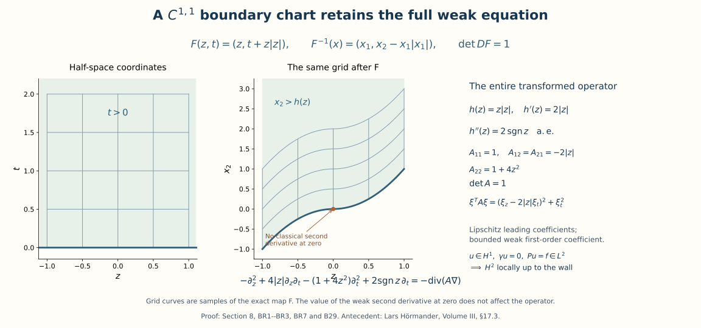

Boundary energy, local inverses, and harmonic data
A boundary condition plays two distinct roles. It selects an energy space before a solution has pointwise values, and it removes one of the normal modes in a local solver. We develop both roles and connect them through a regularity argument that starts with only one derivative. The harmonic case then turns interior solutions into operators acting on boundary data.
The order of construction is intentional: weak existence does not depend on boundary smoothness; regularity does. A separate normal-mode calculation records the precise extension from real to complex quadratic principal symbols. Higher-order systems and arbitrary boundary conditions require their own complementing-condition theory.
1. Spaces, conventions, and exact entry contracts
Put \(D_j=-i\partial_j\), and use \(\widehat u(\xi)=\int e^{-ix\cdot\xi}u(x)\,dx\) with inverse factor \((2\pi)^{-n}\). Thus \(\sum D_j^2=-\Delta\). Inner products are linear in the first variable. On \(\mathbb R^d\),
\[ \|u\|_{H^s}^2=(2\pi)^{-d}\int (1+|\xi|^2)^s|\widehat u(\xi)|^2\,d\xi. \tag{B1} \]For an integer \(k\geq0\), \(H^k(V)\) denotes the space of \(L^2\) functions with all weak derivatives through order \(k\) in \(L^2(V)\). On a half-space it is the restriction of the whole-space space, with equivalent norm; a proof appears below. For nonintegral \(s\), the restriction space carries the quotient norm. We write \(\gamma u\) for the boundary trace and \(\nu\) for the exterior unit normal. An equation with Lipschitz leading coefficients and an initially \(H^1\) solution uses the weak multiplication rule from Section 7 of Local inverses and distance-weighted elliptic estimates: \(aD_jv=D_j(av)-(D_ja)v\).
The next four groups of facts identify exactly what the arguments use.
- Fourier and Sobolev facts. Fourier inversion and Plancherel extend to all of \(L^2\), with the normalization (B1); Fourier transformation commutes with weak derivatives. The full-space extension is the initial Plancherel paragraph in the proof in Section 5 of Two measuring scales, one Weyl product (no selfadjoint-generator result from that item is needed). Its argument, from the Schwartz identity in Section 2 of Fourier transforms, finite spectra and convex separation, is: an isometry on a dense subspace extends to its completion, and its dense image is closed and therefore all of \(L^2\). The same argument gives partial Fourier transformation with an additional \(L^2\) variable, first on finite sums of product functions and then by density. Weighted completions define (B1). No pointwise Fourier transform is required for a general \(L^2\) function.
- Weak derivatives and localization. The integration, weak-derivative, smooth approximation, and Lipschitz product results in Local inverses and distance-weighted elliptic estimates are used with \(p=2\). Smooth changes of variables on compact coordinate patches, finite partitions of unity, and finite-dimensional linear algebra are entry facts. We supply below the precise Sobolev consequences of boundary flattening that are needed here.
- Local elliptic inverses. Section 2 of Local inverses and distance-weighted elliptic estimates supplies a fundamental solution for any homogeneous elliptic scalar polynomial, local bounds for convolution through its order, and the two convolution inverse identities on their stated domains. Section 7 of Local inverses and distance-weighted elliptic estimates supplies the Lipschitz commutator, and Section 8 of Local inverses and distance-weighted elliptic estimates supplies interior \(H^2\) regularity from an \(H^1\) solution with \(L^2\) principal part. Our boundary argument proves the additional trace and reflection assertions instead of treating the interior theorem as a boundary theorem.
- Boundary operator calculus. Only the layer-potential portion uses the order \(-1\) operators, local quantization, Sobolev mapping, and smooth compact-manifold assembly proved in Symbols, operators and Sobolev scales and Detecting regularity without choosing coordinates, and compact-perturbation Fredholm theory in Finite defects under perturbation. The particular kernels, jumps, and boundary data spaces must still be checked below.
All Sobolev estimates are complex-linear unless an energy argument explicitly assumes a real symmetric positive coefficient matrix. Bounds may depend on a fixed coordinate patch and coefficient bounds. A local inverse makes no assertion of uniqueness without conditions on the rest of the boundary.
2. Traces, lifts, and a boundary-free energy domain
Write \(x=(z,t)\in\mathbb R^{n-1}\times(0,\infty)\), \(\lambda(\zeta)=(1+|\zeta|^2)^{1/2}\). The following elementary estimate is the source of the half derivative at the boundary. For a smooth scalar function \(h\) decreasing at infinity,
\[ \lambda |h(t)|^2 \leq\int_t^\infty\bigl(\lambda^2|h(r)|^2+|h'(r)|^2\bigr)\,dr. \tag{B2} \]Indeed integrate \(-(|h|^2)'\) and use \(2\lambda |h||h'|\leq\lambda^2|h|^2+|h'|^2\). The same inequality holds for an \(H^1\) function on the ray by approximation, or by choosing a sequence tending to infinity on which its value tends to zero. Integrating (B2) in \(\zeta\) proves
\[ \sup_{t\geq0}\|u(\cdot,t)\|_{H^{1/2}}\leq C\|u\|_{H^1(\mathbb R^n_+)}. \tag{B3} \]Here and below the assertion about slices refers to their continuous representative, not to an arbitrary representative on sets of measure zero.
We justify the approximation and the weak-space interpretation. If \(u,\partial_tu\in L^2\), testing against products of a test function in \(z\) and one in \(t\) gives the one-dimensional weak derivative identity for almost every tangential slice. A one-dimensional function with integrable weak derivative equals an absolutely continuous primitive plus a constant: subtract its integral primitive; the remaining distribution has derivative zero, as follows by testing against the derivative of every compactly supported test function of integral zero. Reflecting this representative evenly across zero therefore gives an \(H^1\) function. Its tangential derivatives are even reflections and its normal derivative is the signed reflection of \(\partial_tu\); integration by parts on the two rays cancels the boundary terms. Fubini yields a bounded even extension on \(H^1\). Whole-space convolution and cutoffs now give approximation by restrictions of \(C_c^\infty(\mathbb R^n)\). This proves both the weak-derivative characterization of the restriction space and the density used in (B3). The case \(n=1\) has no tangential variable and uses exactly the same one-dimensional argument.
For smooth approximants the map \(t\mapsto u(\cdot,t)\) is continuous into \(H^{1/2}\). Bound (B3) makes these maps uniformly Cauchy on the closed ray, proving bounded continuity for every \(H^1\) function. In particular \(\gamma:H^1(\mathbb R^n_+)\to H^{1/2}(\mathbb R^{n-1})\) is bounded. More generally, for every integer \(k\geq1\),
\[ \gamma:H^k(\mathbb R^n_+)\longrightarrow H^{k-1/2}(\mathbb R^{n-1}), \qquad \widehat{L\varphi}(\zeta,t)=e^{-t\lambda(\zeta)}\widehat\varphi(\zeta) \tag{B4} \]are bounded maps with \(\gamma L=I\). To prove the trace bound, apply (B2) after multiplying by \(\lambda^{2k-2}\); the two resulting integrals are controlled by the tangential derivatives of orders at most \(k\) and their first normal derivatives. For the lift, each derivative of total order \(j\leq k\) has squared integral at most \(C\int\lambda^{2j-1}|\widehat\varphi|^2\), because \(\int_0^\infty e^{-2t\lambda}dt=(2\lambda)^{-1}\). This proves (B4), including its inhomogeneous low frequencies.
For completeness, the restriction and weak norms agree at every integer \(k\). On the negative ray set \(Eu(z,t)=\sum_{j=1}^{k}c_j u(z,-jt)\), choosing the unique solution of \(\sum_{j=1}^{k}c_j(-j)^\ell=1\), \(0\leq\ell<k\). The matrix is Vandermonde. Derivatives through order \(k-1\) match at zero; repeated integration by parts introduces no interface delta through order \(k\). Change of variable on each reflected term bounds the extension in \(H^k\). Smooth approximation follows by this extension and convolution. In particular tangential differentiation commutes with the trace whenever the indicated derivatives lie in \(H^1\).
Let \(u^0\) be extension by zero. Integration by parts, first on smooth approximants and then using (B3), gives the distribution identities
\[ \partial_t u^0=(\partial_tu)^0+\gamma u\otimes\delta_0, \qquad \partial_{z_j}u^0=(\partial_{z_j}u)^0. \tag{B5} \]Consequently \(u^0\in H^1(\mathbb R^n)\) if and only if \(\gamma u=0\). For necessity, an \(L^2\) function cannot be a nonzero distribution supported on a hyperplane: that hyperplane has Lebesgue measure zero. Conversely (B5) lists all its first derivatives as \(L^2\) functions. These formulas also show why a nonzero boundary value cannot simply be extended by zero in an energy argument.
For any bounded open \(\Omega\subset\mathbb R^n\), define
\[ V_\Omega=\overline{C_c^\infty(\Omega)}^{\ H^1(\mathbb R^n)}, \tag{B6} \]identifying its elements with their restrictions to \(\Omega\). Every such element vanishes almost everywhere outside \(\Omega\). This is the homogeneous Dirichlet domain, even when the boundary is irregular. Multiplication by a smooth function with bounded value and first derivatives preserves it, by the product estimate and approximation.
If \(\partial\Omega\) is \(C^1\), three descriptions agree: (B6); functions in \(H^1(\Omega)\) with zero local flattened trace; and \(H^1(\mathbb R^n)\) functions supported in \(\overline\Omega\). Here is the local-to-global proof. A \(C^1\) flattening and its inverse have bounded first derivatives and Jacobians on a smaller compact patch. The chain rule and change of variables bound composition in \(H^1\), initially for smooth functions and then for weak functions by approximation. A zero-trace function extends by zero across the flattened plane by (B5). Translate that extension a distance \(\varepsilon\) into the upper half-space and convolve at radius less than \(\varepsilon/2\); after a fixed smaller cutoff this gives smooth functions supported strictly on the interior side, converging in \(H^1\). Pulling them back gives compactly supported \(C^1\) functions in \(\Omega\); ordinary convolution at a distance smaller than their distance from the boundary approximates each by \(C_c^\infty(\Omega)\). A finite partition of unity and interior convolution prove inclusion in (B6). Conversely (B3) and the composition estimate give zero trace for limits of tests. Finally a whole-space \(H^1\) function supported in \(\overline\Omega\) has identical traces from both sides of each flattened plane, by the slice continuity proof; its exterior trace is zero and so is its interior trace. A \(C^1\) boundary has measure zero, since finitely many graph patches have measure zero by Fubini. Thus there is no additional \(H^1\) function carried only by the boundary. No support characterization for an arbitrary irregular domain has been used.
Inhomogeneous Dirichlet data is removed by a lift, not by a pointwise substitution without a function-space bound. If \(\varphi\in H^{3/2}\) on a flat boundary and \(\Phi=L\varphi\in H^2\), then
\[ Pu=f,\quad\gamma u=\varphi \quad\Longleftrightarrow\quad P(u-\Phi)=f-P\Phi,\quad\gamma(u-\Phi)=0. \tag{B7} \]Bounded coefficients suffice for \(P\Phi\in L^2\). For a divergence-form energy equation the corresponding lift is \(H^{1/2}\to H^1\), and the adjusted forcing is a continuous functional on \(V_\Omega\), generally in \(H^{-1}\), not necessarily \(L^2\). Smooth compact-boundary lifts are obtained from (B4) in charts and a partition of unity. At regularity \(C^{1,1}\), meaning that the first chart derivatives are Lipschitz, the same \(H^{3/2}\to H^2\) assertion holds: integer \(H^2\) composition uses the bounded weak second derivatives of the charts, while the boundary \(H^{3/2}\) norm is \(H^1\) plus the half-order norm of first derivatives. That half-order norm is equivalent to \(\iint |v(x)-v(y)|^2/|x-y|^{d+1}\,dx\,dy\), as Fourier transformation and the substitution \(h=x-y\) show. Bi-Lipschitz changes of variables preserve this integral up to constants, and multiplication by a bounded Lipschitz function is bounded in it after separating differences and integrating near and away from the diagonal. These facts justify the stated chart norm without assuming a smooth boundary at this step.
3. The energy solution before boundary regularity
Let \(\Omega\) be bounded and open. Assume \(A=(a_{jk})\) is real, symmetric, continuous on \(\overline\Omega\), and positive definite at every point there. Compactness supplies constants \(0<\lambda\leq\Lambda<\infty\) with
\[ \lambda|\xi|^2\leq \sum a_{jk}(x)\xi_k\overline{\xi_j} \leq\Lambda|\xi|^2\quad(x\in\overline\Omega,\ \xi\in\mathbb C^n). \tag{B8} \]For complex \(\xi\), apply the real inequality to real and imaginary parts; symmetry cancels their imaginary cross terms. Define
\[ Q(u,v)=\int_\Omega\sum a_{jk}D_ku\,\overline{D_jv}, \qquad P=\sum_{j,k}D_j(a_{jk}D_k). \tag{B9} \]Then for every \(f\in L^2(\Omega)\) there is exactly one \(u\in V_\Omega\) satisfying
\[ Q(u,v)=(f,v)\quad(v\in V_\Omega),\qquad \|u\|_{H^1(\Omega)}\leq C\|f\|_2. \tag{B10} \]The equation holds distributionally, and no boundary regularity is assumed.
Proof. Translate coordinates so that \(|x_1|\leq R\) on \(\Omega\). For a compactly supported test function, integrate \(\partial_1(x_1|u|^2)\) over the whole space. Cauchy-Schwarz gives
\[ \|u\|_2^2\leq2R\|u\|_2\|\partial_1u\|_2, \qquad \|u\|_2\leq2R\|\partial_1u\|_2. \tag{B11} \]Equivalently, before bounding \(|x_1|\), one has \(\|u\|_2^2\leq4\|x_1\partial_1u\|_2^2\). Density extends these bounds to \(V_\Omega\). Hence \(Q(u,u)^{1/2}\) is a norm equivalent to its complete \(H^1\) norm, and \(|(f,v)|\leq C\|f\|_2 Q(v,v)^{1/2}\).
We give the minimization argument, including existence, instead of leaving a representation theorem implicit. Set \(J(v)=Q(v,v)-2\operatorname{Re}(f,v)\). Its infimum \(m\) is finite because \(r^2-2Cr\|f\|_2\) is bounded below. A minimizing sequence \(v_j\) is bounded in the \(Q\) norm. The parallelogram identity gives
\[ Q(v_j-v_k,v_j-v_k) =2J(v_j)+2J(v_k)-4J((v_j+v_k)/2) \leq2J(v_j)+2J(v_k)-4m. \tag{B12} \]It is therefore Cauchy and converges in \(V_\Omega\) to a minimizer \(u\). For real \(t\), differentiating the quadratic polynomial \(J(u+tv)\) at zero gives the real part of (B10). Applying it to \(iv\) gives the imaginary part. Set \(v=u\) and use the functional bound to obtain \(Q(u,u)^{1/2}\leq C\|f\|_2\), hence (B10). The difference of two solutions has zero \(Q\) norm. Testing (B10) on \(C_c^\infty\) is exactly the distributional equation. Conversely that equation for an element of \(V_\Omega\) extends to every \(v\in V_\Omega\) by density and the continuity of both sides. This proves the equivalence as well as uniqueness. \(\square\)
The proof also applies to any continuous conjugate-linear forcing functional on \(V_\Omega\), with its dual norm replacing \(\|f\|_2\). Thus (B7) gives weak existence for lifted boundary values on a regular boundary, and a different lift gives the same solution because their difference belongs to \(V_\Omega\).
Example: an elliptic coefficient without classical first derivatives everywhere. In a ball take \(a_{jk}(x)=(2+|x_1|)\delta_{jk}\). It is continuous, Lipschitz, and uniformly positive. Formula (B10) defines a unique energy solution. Expanding its operator produces the first-order coefficient \(-i\,\operatorname{sgn}(x_1)\) in front of \(D_1u\), defined almost everywhere. A theorem requiring continuous lower-order coefficients would not apply to this expansion. The bounded-lower-coefficient regularity theorem below does.
4. A reflected solver and its two inverse identities
Let \(p_{\mathrm{orig}}\) be a real homogeneous elliptic quadratic polynomial, and write \(p\) for its positive signed comparison. Its quadratic form is definite: on the connected unit sphere for \(n\geq2\), a nonzero continuous real function has constant sign; for \(n=1\) the assertion is immediate. Choose \(\sigma\in\{1,-1\}\) so that \(p=\sigma p_{\mathrm{orig}}\) is positive. It can be reduced to \(|\eta|^2\) by a linear change preserving the plane \(t=0\) and its positive side. Indeed write \(p(\zeta,\tau)=\zeta^TB\zeta+2\tau c^T\zeta+a\tau^2\), where \(a>0\). Completing the square leaves the positive Schur complement \(B-cc^T/a\). A tangential shear removes \(c\); a positive normal dilation and an invertible tangential change normalize the remaining blocks. The dual physical transformation has last coordinate a positive multiple of \(t\). All derivative and measure norms are equivalent under this fixed change. The reflected calculation below uses coordinates in which \(p(D)=-\Delta\). The exact signed comparison with the original form follows.
Here is the exact map back to the original form, including its sign and volume factor. Retain the original \(p_{\mathrm{orig}}\), its sign \(\sigma\), the positive comparison \(p\), and the displayed \(a,B,c\). Put
\[ S=B-\frac{cc^T}{a},\qquad F(w,\rho)=\left(S^{1/2}w+\frac{c}{\sqrt a}\rho,\ \sqrt a\,\rho\right), \qquad J_F=\sqrt a\,(\det S)^{1/2}. \]The matrix \(S\) is positive definite: for nonzero \(\zeta\), evaluate the positive form at \(\tau=-a^{-1}c^T\zeta\) to get \(\zeta^TS\zeta>0\). The exact square and transformed full symbol are
\[ p(\zeta,\tau)=\zeta^TS\zeta+a(\tau+a^{-1}c^T\zeta)^2,\qquad \sigma p_{\mathrm{orig}}\!\left(S^{-1/2}\eta,\ a^{-1/2}\theta-a^{-1}c^TS^{-1/2}\eta\right) =|\eta|^2+\theta^2. \]For \(n=1\), \(S\) is the empty matrix and \(\det S=1\). The inverse coordinates are \(w=S^{-1/2}(z-ct/a)\) and \(\rho=t/\sqrt a\). Thus \(F\) carries the upper half-space onto itself and the boundary plane onto itself. The chain rule gives
\[ (p_{\mathrm{orig}}(D_x)u)\circ F =\sigma\left[-\Delta_{w,\rho}(u\circ F)\right]. \]Indeed the exact derivative maps are \(D_z=S^{-1/2}D_w\) and \(D_t=a^{-1/2}D_\rho-a^{-1}c^TS^{-1/2}D_w\). Substituting both into the displayed full square gives \(D_w^TD_w+D_\rho^2\), including the normal dilation and every mixed term. If \(G_{-\Delta}\) is the reflected construction's whole-space fundamental solution, the original fundamental solution is
\[ G_{p_{\mathrm{orig}}}(x) =\sigma J_F^{-1}G_{-\Delta}(F^{-1}x). \]To verify the factor, change variables \(x=F(w,\rho)\) in a test pairing: the Jacobian \(J_F\) cancels \(J_F^{-1}\), the two factors of \(\sigma\) multiply to one, and \(-\Delta G_{-\Delta}=\delta_0\). On a transformed local patch, the original right or left inverse is \(f\mapsto [T_{-\Delta}(\sigma f\circ F)]\circ F^{-1}\), with the same support restrictions transported by \(F\). All constants in its Sobolev bounds retain their dependence on this fixed map. This conjugation carries every original coefficient through the Laplacian calculation.
Fix a bounded ball \(X\) centered on the plane and invariant under reflection. For \(f\in L^2(X_+)\), let \(Tf\) equal \(f\) on \(X_+\), its negative reflection on \(X_-\), and zero elsewhere. Choose an exact fundamental solution \(G\) of \(-\Delta\) that is even in \(t\). Such a solution is obtained by averaging the solution of Section 2 of Local inverses and distance-weighted elliptic estimates with its reflected distribution. Convolution with \(Tf\), restricted to \(X_+\), defines
\[ E_0f=(G*Tf)|_{X_+}. \tag{B13} \]The local \(L^2\) convolution bounds of Section 2 of Local inverses and distance-weighted elliptic estimates give
\[ \sum_{|\alpha|\leq2}\|D^\alpha E_0f\|_{L^2(X_+)}\leq C_X\|f\|_2, \quad p(D)E_0f=f,\quad\gamma E_0f=0\text{ on }X_0. \tag{B14} \]For the trace, convolution is odd because \(G\) is even and \(Tf\) is odd; it is locally \(H^2\), so the two one-sided traces agree and oddness forces them to vanish. The convolution bounds are local; a global \(L^2\) inverse of the homogeneous Laplacian has not been asserted.
There is also the distinct left identity
\[ E_0p(D)u_+=u_+,\qquad u\in C_c^\infty(X),\quad u|_{X_0}=0. \tag{B15} \]To verify it, reflect \(u_+\) oddly. The function is continuous at the plane. Its first normal derivative is the even reflection of \(\partial_tu_+\), so it too is continuous there. Thus the second normal derivative has no interface delta. Tangential differentiation does not differentiate the sign of \(t\), and tangential derivatives of the zero trace vanish. Therefore \(p(D)Tu_+=T(p(D)u_+)\); the normalization has removed all mixed normal-tangential monomials. Compact support permits transferring \(p(D)\) in the convolution, yielding \(G*p(D)Tu_+=(p(D)G)*Tu_+=Tu_+\). This proves (B15).
The same reasoning proves a useful density fact. If \(v\in H^2(\mathbb R^n_+)\) has zero trace and compact support up to the plane, its odd extension is \(H^2\). The only possible interface term would be the jump of a first derivative. The normal derivative is even, and the tangential derivatives have zero trace by Section 2. Convolving this extension with an even smooth mollifier produces smooth odd functions converging in \(H^2\); a symmetric cutoff keeps their supports in any prescribed slightly larger neighborhood. Consequently (B15) and its norm estimate extend to such \(H^2\) functions whenever their support lies in the fixed patch.
5. Continuous principal coefficients and a local inverse
Let
\[ P(x,D)=\sum_{|\alpha|\leq2}a_\alpha(x)D^\alpha \tag{B16} \]near zero. Suppose the principal coefficients are continuous, their frozen quadratic polynomial is real elliptic, and the lower-order coefficients are locally essentially bounded. Then a sufficiently small neighborhood \(X\) has a bounded linear map \(E:L^2(X_+)\to H^2(X_+)\) with
\[ PEf=f,\quad\gamma Ef=0\text{ on }X_0,\qquad EPu_+=u_+\quad(u\in C_c^\infty(X),\ u|_{X_0}=0). \tag{B17} \]The original continuous-coefficient situation is included. Products in \(PEf\) are \(L^2\) products, since \(Ef\in H^2\).
Proof. Make the boundary-preserving normalization above and work on a fixed unit patch in the rescaled variable \(y=x/r\). Multiplying the equation by \(r^2\) gives a frozen principal operator \(p(D_y)\) and perturbation
\[ R_r=\sum_{|\alpha|=2}(a_\alpha(ry)-a_\alpha(0))D_y^\alpha +\sum_{|\alpha|<2}r^{2-|\alpha|}a_\alpha(ry)D_y^\alpha. \tag{B18} \]By (B14), \(\|R_rE_0\|_{L^2\to L^2}\to0\). Choose \(r\) making this norm at most \(1/2\), put \(A_r=R_rE_0\), and set
\[ E_r=E_0(I+A_r)^{-1},\qquad (I+A_r)^{-1}=\sum_{j=0}^\infty(-A_r)^j. \tag{B19} \]The series converges in operator norm, gives a two-sided inverse, and has norm at most two. Since \(P_rE_0=I+A_r\), the right identity and trace assertion follow. For a compact smooth zero-trace \(u\), put \(g=p(D)u\). Identity (B15) gives \(E_0g=u\), and hence \(P_ru=(I+A_r)g\). Applying (B19) yields the left identity. Rescaling back gives (B17) and boundedness of every derivative through order two. Explicitly the scaled bound is \(\sum_{j=0}^2r^j\|\nabla^j Ef\|_2\leq Cr^2\|f\|_2\). No smallness of unscaled lower-order coefficients was assumed. \(\square\)
In particular compact smooth zero-trace functions satisfy
\[ \|w\|_{H^2(X_+)}\leq C\|Pw\|_{L^2(X_+)}. \tag{B20} \]The odd-density result after (B15) extends (B20) to compactly supported \(H^2\) zero-trace functions in a slightly smaller patch. This extension will be used only after the regularized function has been proved to be \(H^2\).
6. Recovering second derivatives at a flat boundary
Assume the principal coefficients in (B16) are Lipschitz, the frozen principal polynomial is real elliptic, and the lower-order coefficients are locally bounded. If
\[ u\in H^1(X_+),\qquad Pu=f\in L^2(X_+),\qquad\gamma u=0\text{ on }X_0, \tag{B21} \]then for every \(Y\Subset X\),
\[ u\in H^2(Y_+),\qquad \sum_{|\alpha|=2}\|D^\alpha u\|_{L^2(Y_+)} \leq C_Y\bigl(\|f\|_{L^2(X_+)}+\|u\|_{H^1(X_+)}\bigr). \tag{B22} \]Here \(Y\) may meet the boundary plane. Merely knowing the interior theorem would not establish this assertion.
Proof. Choose \(\chi\in C_c^\infty(X)\) equal to one near \(\overline Y\), put \(v=\chi u\), and extend tangentially by zero beyond the patch. The product rule gives \(Pv=\chi f+[P,\chi]u=:g\in L^2\), with \(\|g\|_2\leq C(\|f\|_2+\|u\|_{H^1})\). All terms of the commutator have order at most one. The coefficient of \(D_t^2\) is nonzero near zero. Dividing by it preserves Lipschitz principal coefficients and bounded lower-order coefficients; it also preserves the weak equation because the Lipschitz product rule is associative, as follows by approximating the \(H^1\) input by smooth functions. Hence assume that coefficient is one.
Let \(J_\varepsilon\) be convolution in \(z\) alone with a compactly supported smooth approximate identity, and put \(v_\varepsilon=J_\varepsilon v\). Its first derivatives converge in \(L^2\). Every second derivative with a tangential factor is \(L^2\), since that derivative may be put on the smooth kernel and the remaining derivative falls on \(v\in H^1\). For a principal multi-index other than \(2e_t\), write \(D^\alpha=D_jD_k\) with \(j\) tangential. Apply Section 7 of Local inverses and distance-weighted elliptic estimates, at fixed \(t\), to \(D_kv\). The Lipschitz constant and the kernel bound are uniform in \(t\). Integration of the squared bounds and dominated convergence yield
\[ a_\alpha D^\alpha J_\varepsilon v-J_\varepsilon(a_\alpha D^\alpha v) \longrightarrow0\quad\text{in }L^2. \tag{B23} \]More explicitly, the commutator is bounded by a fixed constant times the tangential \(L^2\) norm of \(D_kv(\cdot,t)\); for almost every \(t\) that norm is finite and the commutator tends to zero. The square of this dominating function is integrable in \(t\). The pure normal term commutes exactly because its coefficient is one. For lower-order terms no coefficient derivative is required: if \(h=D^\alpha v\in L^2\) and \(a\in L^\infty\), then \(aJ_\varepsilon h-J_\varepsilon(ah)=a(J_\varepsilon h-h)+(ah-J_\varepsilon(ah))\to0\) in \(L^2\). Thus
\[ Pv_\varepsilon=J_\varepsilon g+o_{L^2}(1). \tag{B24} \]The equation, with the already established nonnormal second derivatives, now gives \(D_t^2v_\varepsilon\in L^2\). This proves \(v_\varepsilon\in H^2\) before (B20) is invoked. Its trace is zero, since \(J_\varepsilon\) commutes with the trace; for small \(\varepsilon\) its support stays in a fixed compact subpatch.
Apply (B20) to \(v_\varepsilon-v_\delta\), using the odd-extension density established after (B15). By (B24) the right side tends to zero. The functions are therefore Cauchy in \(H^2\); their \(H^1\) limit is \(v\), so their second-derivative limits are its distributional second derivatives. Taking the bound for each \(v_\varepsilon\) and then passing to the limit proves (B22). For \(n=1\), there is no tangential smoothing step: after normalization the equation directly expresses \(D_t^2v\) as an \(L^2\) function, and (B20) gives the same estimate. \(\square\)
7. Smooth bootstrap and a single inverse on all integer scales
Suppose the coefficients are smooth on a neighborhood of the closed flat patch and retain the ellipticity condition above. For every integer \(r\geq0\), a zero-trace solution initially in \(H^1\), with \(Pu\in H^r\), satisfies on a smaller patch
\[ \|u\|_{H^{r+2}(Y_+)}\leq C_{r,Y}\bigl(\|Pu\|_{H^r(X_+)}+\|u\|_{H^1(X_+)}\bigr). \tag{B25} \]The nested patches used in the proof may depend on \(r\); the solution does not.
Proof. The case \(r=0\) is (B22). Inductively suppose \(u\in H^{r+1}\) locally up to the plane. For a tangential multi-index \(\beta\) of length \(r\), the differentiated equation for \(D_z^\beta u\) has right side \(D_z^\beta f+[P,D_z^\beta]u\in L^2\). In each commutator term at least one derivative lands on a coefficient, so the derivative on \(u\) has order at most \(r+1\). The differentiated function is \(H^1\), and its trace is zero by (B4) and smooth approximation. Applying (B22) gives all derivatives of total order \(r+2\) with at most two normal factors. Normalize the coefficient of \(D_t^2\) to one and write
\[ D_t^2u=f-\sum_{\alpha\ne2e_t}b_\alpha D^\alpha u. \tag{B26} \]For a derivative of total order \(r+2\) with \(q\geq3\) normal factors, differentiate (B26) by its remaining multi-index of order \(r\). Terms with no coefficient derivative have at most \(q-1\) normal factors; all other terms on \(u\) have total order at most \(r+1\). Increasing induction on \(q\) therefore supplies every derivative and its bound. Cutoffs between \(Y\) and \(X\), and the preceding-order estimates, control the localization commutators. This gives (B25) with a finite constant for every \(r\). \(\square\)
There is, in addition, one local inverse acting on the whole half-space, whose higher-regularity property holds for all such integers. Choose a patch \(X_1\) on which (B17) is constructed, a smaller \(X\), and smooth cutoffs \(\eta_0,\eta_1\) with compact support in \(X_1\), where \(\eta_0=1\) near \(\overline X\) and \(\eta_1=1\) near \(\operatorname{supp}\eta_0\). With \(E_1\) the inverse on \((X_1)_+\), define
\[ \mathcal E f=\bigl[\eta_0 E_1(\eta_1f|_{(X_1)_+})\bigr]^0_{ \text{outside }X_1\text{ within the half-space}}. \tag{B27} \]The cutoff vanishes near the artificial boundary, so the indicated extension is bounded into \(H^2(\mathbb R^n_+)\). On \(X_+\), \(P\mathcal Ef=f\) and its trace is zero. If \(u\in C_c^\infty(X)\) has zero trace, then \(\eta_1Pu=Pu\), so (B17) gives \(\mathcal EPu=u\) on \(X_+\). Finally (B25), applied on a neighborhood of \(\operatorname{supp}\eta_0\), gives
\[ \mathcal E:H^r(\mathbb R^n_+)\longrightarrow H^{r+2}(\mathbb R^n_+) \quad\text{bounded for every integer }r\geq0. \tag{B28} \]The operator in (B27) is fixed before \(r\) is chosen. Global half-space boundedness and the local inverse identities are separate statements.
8. Global regularity of the energy solution
Under the assumptions of Section 3, suppose now that \(\partial\Omega\) is \(C^{1,1}\) and the coefficients \(a_{jk}\) are Lipschitz on \(\overline\Omega\). Then the solution of (B10) satisfies
\[ u\in H^2(\Omega),\qquad \|u\|_{H^2(\Omega)}\leq C\|f\|_2. \tag{B29} \]If the coefficients, boundary, and forcing are smooth up to the boundary, then \(u\in C^\infty(\overline\Omega)\).
Proof. On an interior patch, expansion of divergence form gives \(Pu=\sum a_{jk}D_jD_ku+\sum(D_ja_{jk})D_ku\). The second sum is \(L^2\), since its coefficients are bounded almost everywhere. The interior theorem in Section 8 of Local inverses and distance-weighted elliptic estimates applies to the principal part with \(p=2,m=2\), giving a local \(H^2\) bound in terms of \(\|f\|_2+\|u\|_{H^1}\).
In a boundary patch use a \(C^{1,1}\) flattening \(x=F(y)\). Weak \(H^1\) chain rules were proved in Section 2. The transformed principal coefficient matrix is obtained by multiplying \(A\) on its two sides by the inverse derivative of \(F\); it is real positive definite, uniformly so on a smaller compact patch. Its entries are Lipschitz: \(A\circ F\) is Lipschitz, and the first derivative of the \(C^{1,1}\) diffeomorphism and its inverse are Lipschitz on that patch. The additional first-order coefficients involve first weak derivatives of \(A\) and weak second derivatives of \(F\), and are bounded almost everywhere. One can first transform the divergence-form weak identity by change of variables and then expand it; this justifies the computation for \(u\in H^1\) without assuming second derivatives. The Jacobian and its inverse are bounded. The trace is zero by the characterization after (B6). Thus (B22), including its bounded-lower-coefficient case, gives the desired local estimate. Here are the weak chart details needed at this lower boundary regularity. Locally the boundary is a graph \(x_n=h(x')\) with \(h\in C^{1,1}\); take
\[ F(y',t)=(y',t+h(y')),\qquad F^{-1}(x)=(x',x_n-h(x')),\qquad \det DF=1. \tag{BR1} \]On each fixed compact patch \(DF,DF^{-1}\) are bounded and Lipschitz, and every weak second derivative of either map is bounded. A general fixed rigid change before this graph map retains these properties and its actual Jacobian. The \(H^1\) composition result in Section 2 applies, since these are \(C^1\) diffeomorphisms. For a smooth function \(v\), its first composed derivatives are products of \(Dv\circ F\) with entries of \(DF\). Applying the Lipschitz weak product rule to these products gives the full formula, almost everywhere,
\[ \partial_i\partial_j(v\circ F) =\sum_{a,b}(\partial_a\partial_bv)\circ F\, \partial_iF_a\,\partial_jF_b +\sum_a(\partial_av)\circ F\,\partial_i\partial_jF_a. \tag{BR2} \]Every term is in \(L^2\), with its norm bounded by a fixed multiple of the \(H^2\) norm of \(v\) on the corresponding patch. Approximate a localized half-space \(H^2\) function by the extension and convolution in Section 2. The zeroth, first and second expressions in (BR2) are Cauchy in \(L^2\); testing against compactly supported smooth functions identifies their limits with the weak derivatives of the composed function. This proves the bounded \(H^2\) composition map by \(F^{-1}\) as well. The input energy solution needs only the already proved \(H^1\) composition until the flattened boundary theorem supplies its \(H^2\) regularity.
For clarity, the original divergence-form weak identity transforms with the full coefficient
\[ \mathcal A(y)=|\det DF(y)|\,DF(y)^{-1} A(F(y))\,DF(y)^{-T}. \tag{BR3} \]Change of variables in the two first-derivative integrals proves this identity for \(H^1\) inputs and tests. Divide by the positive Jacobian to write the transformed distributional equation on coordinate volume. Expanding the divergence uses weak first derivatives of the Lipschitz entries of \(\mathcal A\); they are bounded. The transformed principal matrix is \(DF^{-1}A(F)DF^{-T}\), and is uniformly positive on the retained compact patch. All remaining terms involve bounded coefficient derivatives, the retained Jacobian derivatives and first derivatives of the solution. The right side is \(f\circ F\), with its actual volume norm. This proves the nondivergence-form interface to (B22) under \(C^{1,1}\), without assuming classical second chart derivatives. After (B22), (BR2) transfers the resulting \(H^2\) function back. Thus (B29) includes \(C^2\) boundaries and the larger \(C^{1,1}\) class with the same original operator and energy domain.
A finite cover of the compact closure by these boundary patches and interior patches, with cutoffs, yields \(\|u\|_{H^2}\leq C(\|f\|_2+\|u\|_{H^1})\). Bound (B10) removes the final term and proves (B29). For smooth data use (B25) in every boundary chart and its interior version, or the same differentiated-equation argument without a boundary. This gives every integer Sobolev order. To conclude classical smoothness, extend each localized function by the integer extension after (B4); for \(k>j+n/2\), Cauchy-Schwarz makes \(\xi^\alpha\widehat u\in L^1\), \(|\alpha|\leq j\). Fourier inversion and dominated convergence give continuous derivatives through order \(j\). Since \(j\) is arbitrary, smoothness holds up to the boundary. \(\square\)
A boundary with a bounded second weak derivative and no classical second derivative. In a two-dimensional chart take \(h(z)=z|z|\), with the domain above its graph. Then \(h'(z)=2|z|\) is Lipschitz, and \(h''=2\operatorname{sgn}z\) almost everywhere; the second derivative has no value at zero. The graph flattening (BR1) has determinant one and the transformed full negative Laplacian is
\[ -\partial_z^2+4|z|\partial_z\partial_t -(1+4z^2)\partial_t^2 +2\operatorname{sgn}z\,\partial_t =-\operatorname{div}\! \left(\begin{pmatrix}1&-2|z|\\-2|z|&1+4z^2\end{pmatrix} \nabla\right). \tag{BR7} \]Both formulas act weakly. The matrix determinant is one and its quadratic form is \((\xi_z-2|z|\xi_t)^2+\xi_t^2\); on compact patches it is uniformly positive. Its entries are Lipschitz, and its displayed lower-order coefficient is bounded. Thus this graph satisfies the exact boundary regularity interface although it is not \(C^2\). It is a local chart example; the global theorem still requires the full bounded domain and its complete boundary to be \(C^{1,1}\).

The two graph pieces and the transported grid are numerical samples of the exact formulas (BR1) and (BR7). The weak derivative has values \(2\) and \(-2\) on the two open sides; its value at zero does not affect the operator. The \(H^2\) receiving map is proved in (BR2)–(BR3) and (B29). The antecedent is Hörmander III, §17.3; the weaker chart hypothesis is established here from the displayed weak derivative calculation.
9. Complex quadratic symbols and the low-frequency repair
The construction below supplies the complex-coefficient extension of the local Dirichlet inverse and, with smooth coefficients, its simultaneous integer Sobolev improvements. An auxiliary boundary at a fixed positive height removes the low-frequency obstruction. It disappears from the final local assertions.
9.0. Unordered roots, simple-root coordinates and the tangential sphere
We prove the finite-dimensional root and sphere facts before using them in the normal-mode construction. The full factorization theorem, with the original leading coefficient and every multiplicity, is proved in Sections9.1--9.4 of Polynomial and contour tools. Closed bounded finite-coordinate sets are compact by Sections12.6--12.9 of Metric foundations. The actual inverse and implicit maps, including their full remainders and all higher derivatives, are proved in Sections16.4--16.5 of Geometric microlocal calculus. Below we identify the exact polynomial and real derivative matrices to which those proofs apply. No half-plane root count is used to prove its own continuity prerequisite.
The original quadratic, including a repeated root
Let
\[ Q(z)=az^2+bz+c,\qquad a\ne0,\qquad \mathcal D=b^2-4ac,\qquad d^2=\mathcal D. \tag{RC1} \]The complex-root theorem supplies a square root of the actual number \(\mathcal D\). When \(\mathcal D=0\), its square root is zero. If \(\mathcal D\ne0\), its two square roots are \(d,-d\): any other square root \(e\) obeys \((e-d)(e+d)=0\), so one factor is zero. Put
\[ z_1=\frac{-b+d}{2a},\qquad z_2=\frac{-b-d}{2a},\qquad Q(z)=a(z-z_1)(z-z_2). \tag{RC2} \]To prove the last identity, add and multiply the first two expressions: their sum is \(-b/a\), and their product is \((b^2-d^2)/(4a^2)=c/a\). Expanding the full last product therefore gives exactly \(az^2+bz+c\). The original leading factor \(a\), both occurrences of a repeated root, and the entire discriminant remain. Changing \(d\) to \(-d\) exchanges the two entries and changes no unordered pair. When \(\mathcal D=0\), both entries are the original double root \(-b/(2a)\).
For two unordered root lists \(R=(z_1,z_2)\), \(R'=(w_1,w_2)\), define their distance by
\[ d_2(R,R')= \min\{\max(|z_1-w_1|,|z_2-w_2|), \max(|z_1-w_2|,|z_2-w_1|)\}. \tag{RC3} \]Permuting either list exchanges the two candidates, so this is well-defined for unordered pairs with multiplicity. It is symmetric and nonnegative, and it vanishes exactly when the lists agree after a permutation. The triangle inequality follows by composing minimizing permutations for two consecutive comparisons and applying the ordinary complex triangle inequality to each matched entry, then taking the maximum. Thus RC3 is a metric on these unordered pairs. It does not choose a continuous square-root sign or discard repeated roots.
Suppose the original coefficient triples \((a_k,b_k,c_k)\) tend to \((a,b,c)\), with \(a\ne0\). For all sufficiently large \(k\), \(|a_k|\geq|a|/2\), and \(|b_k|+|c_k|\) has a finite bound \(M\). Every root \(z\) of the actual \(Q_k\) with \(|z|\geq1\) satisfies
\[ |a_k|\,|z|^2\leq |b_k|\,|z|+|c_k| \leq (|b_k|+|c_k|)|z|,\qquad |z|\leq\frac{2M}{|a|}. \tag{RC4} \]Consequently all roots lie in the fixed disk of radius \(1+2M/|a|\). List the two roots in nondecreasing order of their original real coordinates and then their imaginary coordinates, retaining repeats. This selects representatives of the unordered pairs; no continuity of the ordering is asserted. Finite-coordinate compactness gives a subsequence on which both entries converge, say to \(u,v\). Passing to the limit in the complete factorization, or in each of its three coefficients, gives
\[ az^2+bz+c=a(z-u)(z-v). \tag{RC5} \]Uniqueness of multiplicities in the full factorization theorem says that \((u,v)\) is exactly the original unordered root pair of \(Q\). If convergence in RC3 failed, a subsequence would have distance at least some \(\varepsilon>0\) from that pair. Applying the preceding compactness argument to this subsequence gives a further subsequence whose distance tends to zero, a contradiction. This also proves epsilon-delta continuity: its failure would provide coefficient triples within \(1/k\) of the original triple whose root distances stay at least one fixed positive epsilon, contradicting the just-proved sequence result. Thus continuity holds at every original coefficient triple with nonzero leading coefficient, including the discriminant-zero locus. An ordered continuous choice was neither assumed nor needed.
The following finite-degree extension is separate from the quadratic entry, and uses the same full factorization proof. For original polynomials
\[ P_k(z)=\sum_{j=0}^m a_{j,k}z^j,\quad a_{j,k}\longrightarrow a_j,\quad a_m\ne0,\qquad P(z)=\sum_{j=0}^m a_jz^j, \tag{RC6} \]keep the degree \(m\), leading coefficient and all \(m\) root occurrences. For \(|z|\geq1\), the original root equation gives \( |a_{m,k}||z|^m\leq\sum_{j=0}^{m-1}|a_{j,k}||z|^j \leq |z|^{m-1}\sum_{j=0}^{m-1}|a_{j,k}|\). The nonvanishing leading coefficient and bounded complete lower-coefficient sum give a fixed disk containing every root. Any sequence of full root lists has a coordinatewise convergent subsequence. In the limit the original identity is \(P(z)=a_m\prod_{j=1}^m(z-u_j)\). Full factorization uniqueness identifies every limit occurrence with its correct multiplicity. The same contradiction proves convergence in
\[ d_m(R,R')=\min_{\sigma\in\mathfrak S_m} \max_{1\leq j\leq m}|z_j-w_{\sigma(j)}|. \tag{RC7} \]The proof that this is an unordered-multiset metric is exactly the composition-of-permutations argument, with all \(m\) matched terms retained. A nonzero constant has the empty root list and distance zero; the zero polynomial and a vanishing degree-\(m\) leading coefficient are outside this theorem. No polynomial is replaced by a monic one.
The exact real implicit map at a simple complex root
Let the coefficients of the original \(P(s,z)=\sum_{j=0}^m a_j(s)z^j\) be \(C^r\) in the original real parameter coordinates \(s\), \(1\leq r\leq\infty\). Suppose \(P(s_0,z_0)=0\) and
\[ w=\partial_zP(s_0,z_0) =\sum_{j=1}^m j a_j(s_0)z_0^{j-1}\ne0. \tag{RC8} \]Write \(z=x+iy\), and apply the real implicit theorem to the actual map \(F(s,x,y)=(\operatorname{Re}P(s,x+iy),\operatorname{Im}P(s,x+iy))\). Finite polynomial expansion of the increment in \(z\) gives its first term \(w(\Delta x+i\Delta y)\) and its full higher-order remainder. Thus its actual two by two derivative and inverse at the original point are
\[ A=\begin{pmatrix}\operatorname{Re}w&-\operatorname{Im}w\\ \operatorname{Im}w&\operatorname{Re}w\end{pmatrix}, \qquad \det A=|w|^2,\qquad A^{-1}=\frac1{|w|^2} \begin{pmatrix}\operatorname{Re}w&\operatorname{Im}w\\ -\operatorname{Im}w&\operatorname{Re}w\end{pmatrix}. \tag{RC9} \]Both matrix products are the identity by direct multiplication. The denominator is positive by RC8. The unchanged augmented map \((s,x,y)\mapsto(s,F(s,x,y))\) therefore has precisely the invertible block derivative of IV9 in the independent implicit proof. That proof supplies original neighborhoods and a unique \(C^r\) root \(z(s)\) in the chosen root neighborhood, with \(z(s_0)=z_0\). It retains the original coefficient functions, parameter coordinates and Euclidean complex norm; no replacement of \(A\) by the identity is used.
Differentiating the actual equation gives, in every original parameter direction \(v\),
\[ D_sz(s)[v]=- \frac{\displaystyle\sum_{j=0}^m(D_sa_j(s)[v])z(s)^j} {\displaystyle\sum_{j=1}^m j a_j(s)z(s)^{j-1}}. \tag{RC10} \]This complex formula is the real matrix expression \(-A(s)^{-1}D_sF(s,z(s))[v]\), since RC9 is multiplication by the reciprocal of the actual complex derivative. The full numerator, denominator, signs and all coefficients remain. For the original quadratic the denominator is \(2a(s)z(s)+b(s)\), and the numerator is \(D_sa(s)[v]z(s)^2+D_sb(s)[v]z(s)+D_sc(s)[v]\).
For clarity, every higher derivative is also governed by the complete original implicit identity. Put \(Z(s)=(s,\operatorname{Re}z(s),\operatorname{Im}z(s))\). For a finite set of direction labels and \(2\leq N\leq r\), let \(D_BZ\) retain exactly the labels in the nonempty block \(B\). In the full labeled-partition chain rule for \(F(Z(s))=0\), the one-block term is \(A(s)D^Nz(s)\), with the complex derivative read in its two real coordinates: the parameter component of \(D^NZ\) is zero for \(N\geq2\). Hence
\[ D^Nz(s)[v_1,\ldots,v_N] =-A(s)^{-1} \sum_{\substack{\Pi\in\mathfrak P(\{1,\ldots,N\})\\|\Pi|\geq2}} D^{|\Pi|}F(Z(s))[D_BZ(s):B\in\Pi]. \tag{RC11} \]Both sides of RC11 are read as their original real and imaginary coordinate columns; the inverse coordinate map returns the complex derivative. Every real parameter block, coefficient derivative and repeated-direction multiplicity remains. The chain rule is proved by inserting the next label in an existing block or adding its singleton block; those two possibilities give every new partition once. IV7--IV10 prove the needed smooth inverse and preserve every ordered matrix factor. Thus RC11 is an exact identity at every available order, including coefficients that are only \(C^r\).
Continuous paths on the original tangential sphere
Let \(d\geq1\) and keep the original sphere \(S^d=\{u\in\mathbb R^{d+1}:|u|=1\}\). For \(u,v\in S^d\) with \(v\ne-u\), the original segment \((1-t)u+tv\) never vanishes on \([0,1]\): a zero in the interior would make \(v\) a negative multiple of \(u\), and their original unit lengths would force \(v=-u\). The explicit radial map from \(\mathbb R^{d+1}\setminus\{0\}\) to the sphere gives the path
\[ q_{u,v}(t)=\frac{(1-t)u+tv}{|(1-t)u+tv|},\qquad q_{u,v}(0)=u,\quad q_{u,v}(1)=v. \tag{RC12} \]Its denominator is continuous and positive, so the path is continuous and belongs to the original sphere. If \(v=-u\), choose an original coordinate \(j\) with \(|u_j|<1\). Such a coordinate exists because there are at least two coordinates and \(\sum u_j^2=1\). The exact vector and its squared length are
\[ w_j=e_j-u_ju,\qquad u\cdot w_j=0,\qquad |w_j|^2=1-u_j^2>0,\qquad v_j=\frac{e_j-u_ju}{\sqrt{1-u_j^2}}\in S^d. \tag{RC13} \]The vector \(v_j\) is orthogonal to \(u\), so neither pair \((u,v_j)\), \((v_j,-u)\) is antipodal. Concatenate RC12 for those pairs: use \(q_{u,v_j}(2t)\) on \([0,1/2]\) and \(q_{v_j,-u}(2t-1)\) on \([1/2,1]\). Both values at the join are \(v_j\). This constructs a continuous path between every two original sphere points, retaining every coordinate and denominator.
To conclude connectedness, a separation into two nonempty relatively open sets would give a continuous indicator with values zero and one. A path joining a point of each set would give a continuous real function on \([0,1]\) taking both endpoint values, contradicting the intermediate value theorem at \(1/2\). Thus \(S^d\) is connected. The zero-dimensional sphere \(S^0=\{-1,1\}\) has its two singleton open components and is not connected; no positive-dimensional argument is applied to it.
Exact use by the original homogeneous quadratic
Return to the original
\[ p(\xi',\tau)=a\tau^2+b(\xi')\tau+c(\xi'),\quad a=p(0,1)\ne0,\quad p(\xi)\ne0\ (\xi\in\mathbb R^n\setminus\{0\}). \tag{RC14} \]For \(\omega\in S^{n-2}\), neither normal root is real: a real root would give the forbidden nonzero real vector \((\omega,\tau)\). At a fixed \(\omega\), put \(\varepsilon=\frac12\min_j|\operatorname{Im}z_j|>0\), retaining both occurrences. RC3 continuity on an original coefficient neighborhood pairs both perturbed roots within \(\varepsilon\) of the fixed ones. Their imaginary signs cannot change. Consequently the number \(N_+(\omega)\) of upper roots, including multiplicity, is locally constant. Composition with any RC12--RC13 path is a continuous integer-valued function on an interval, hence constant by the intermediate value theorem. When \(n>2\), connectedness makes the upper count constant on the entire tangential sphere.
The original odd linear coefficient and even quadratic coefficient give, without discarding any term,
\[ p(-\omega,\tau)=a\tau^2-b(\omega)\tau+c(\omega) =p(\omega,-\tau),\qquad N_+(-\omega)=2-N_+(\omega). \tag{RC15} \]The constant count therefore satisfies \(N_+=2-N_+\), so \(N_+=1\). Each root is simple because one is in each open half-plane. RC8--RC11 apply to the original polynomial at each nonzero tangential frequency. Uniqueness in the upper and lower half-planes makes the smooth local labels agree on every overlap, producing the actual global \(\lambda_+,\lambda_-\) there.
For \(r>0\), full homogeneity gives
\[ p(r\xi',r\tau)=r^2p(\xi',\tau),\qquad p(r\xi',\tau)=r^2p(\xi',\tau/r),\qquad \lambda_\pm(r\xi')=r\lambda_\pm(\xi'). \tag{RC16} \]The first two identities retain the original \(a\), both homogeneous coefficient terms and all powers of \(r\). The last follows from their exact root correspondence and the signs of the imaginary parts. The antipodal identities also give \(\lambda_+(-\xi')=-\lambda_-(\xi')\) and \(\lambda_-(-\xi')=-\lambda_+(\xi')\); the labels are exchanged as required.
On the original compact sphere, define the actual constants
\[ c_0=\min\{\min_\omega\operatorname{Im}\lambda_+(\omega), \min_\omega[-\operatorname{Im}\lambda_-(\omega)]\}>0, \qquad C_0=\max_\omega(|\lambda_+(\omega)|+|\lambda_-(\omega)|)>0. \tag{RC17} \]Continuity and attained extrema prove the positivity and finiteness: each imaginary quantity is strictly positive everywhere and has an attained minimum. RC16 gives exactly CM1 with these constants, and also \(|\lambda_+-\lambda_-|\geq2c_0|\xi'|\). At every multi-index \(\alpha\), differentiating the original scaling identity retains the factor \(r^{|\alpha|}\), and yields
\[ r^{|\alpha|}(\partial_{\xi'}^\alpha\lambda_\pm)(r\xi') =r(\partial_{\xi'}^\alpha\lambda_\pm)(\xi'),\qquad |\partial_{\xi'}^\alpha\lambda_\pm(\xi')| \leq C_{\alpha,\pm}|\xi'|^{1-|\alpha|}, \quad C_{\alpha,\pm}=\max_\omega |\partial_{\xi'}^\alpha\lambda_\pm(\omega)|. \tag{RC18} \]This supplies every original smooth-label derivative with its full frequency power. It makes no assertion of smooth labels through a root collision or through zero frequency.
When \(n=2\), the sphere is \(S^0\). Keep the additional original hypothesis of one root in each half-plane at \(\xi'=1\). RC15 then gives one in each half-plane at \(-1\), and RC16 handles every nonzero tangential frequency. RC17--RC18 hold on the finite two-point sphere. Ellipticity alone does not supply that hypothesis; the repeated-root example below retains its exact counterexample. When \(n=1\), there is no nonzero tangential frequency and no sphere argument: the original operator is \(aD_t^2\), whose interval inverse is calculated below with the same original \(a\). These are precisely the dimensions used by the scalar normal-mode construction.
Precise prerequisites
The finite-dimensional ingredients now have full independent proofs: original complex factorization in Polynomial and contour tools Sections9.1--9.4; unordered root continuity, including collisions and every multiplicity, and exact simple-root implicit coordinates in Section9.0; original finite-coordinate compactness in Metric foundations Sections12.5--12.9; and positive-dimensional sphere paths in Section9.0. The complete root-count and quantitative-separation receiving argument is proved in RC14--RC18 and CM1. The planar extra root condition and the one-dimensional interval case remain explicit.
Use Plancherel and the derivative rule for the Fourier transform on \(\mathbb R^{n-1}\), Fubini and Fatou's lemma, elementary weak derivatives, and the characterization of integer \(H^m\) by square-integrable derivatives. The tangential Fourier normalization may be unitary; using the course convention \(\widehat f(\xi')=\int e^{-ix'\cdot\xi'}f(x')\,dx'\) merely inserts the same factor \((2\pi)^{1-n}\) in both Plancherel integrals. Also use the one-dimensional fundamental theorem for \(H^1\), the trace map proved in Section 2, completeness of \(L^2\)/\(H^2\), density of smooth functions for identifying weak derivatives, and the elementary bounded inverse series \((I+A)^{-1}=\sum_{k\geq0}(-A)^k\) when \(\|A\|<1\). The weak difference-quotient implication used in the smooth refinement is proved below, so it is not an unnamed elliptic regularity import.
Only elementary scalar ODE algebra is needed: a solution of \((D-\lambda_+)(D-\lambda_-)v=0\), with distinct roots, is a linear combination of \(e^{it\lambda_+}\) and \(e^{it\lambda_-}\). This follows either by integrating each first-order equation, or by Sections 1–2 of Stable modes and the algebra of boundary data. No general boundary pseudodifferential calculus, parameter ellipticity, coercive variational theorem, or unproved global inverse for a homogeneous symbol is used.
Root separation at every nonzero tangential frequency
Let \(p\) be a complex homogeneous polynomial of degree two on \(\mathbb R^n\), elliptic in the sense
\[ p(\xi)\ne0\qquad(\xi\in\mathbb R^n\setminus\{0\}). \]Write
\[ p(\xi',\tau)=a\tau^2+b(\xi')\tau+c(\xi'),\qquad a=p(0,1)\ne0, \]where \(b\) and \(c\) are homogeneous of degrees one and two. Assume that, for every \(\xi'\ne0\), there is one normal root in each open half-plane. Denote the roots by \(\lambda_+(\xi')\) and \(\lambda_-(\xi')\), their signs referring to their imaginary parts. They are distinct, depend smoothly on \(\xi'\ne0\), are positively homogeneous of degree one, and for constants \(c_0,C_0>0\),
\[ \operatorname{Im}\lambda_+\geq c_0|\xi'|, \quad-\operatorname{Im}\lambda_-\geq c_0|\xi'|, \quad |\lambda_+|+|\lambda_-|\leq C_0|\xi'|. \tag{CM1} \]Here is why the assumption on root counts is automatic when \(n>2\). On the tangential unit sphere, no root can meet the real axis, by ellipticity. The number of roots in the upper half-plane, counted with multiplicity, is consequently locally constant. One can see this without any chosen labeling: the two roots depend continuously as an unordered pair on the coefficients, and a small perturbation keeps each root away from the real axis. The sphere \(S^{n-2}\) is connected for \(n>2\), so this count is constant. Homogeneity gives
\[ p(-\xi',\tau)=p(\xi',-\tau), \]which exchanges upper and lower root counts. The constant upper count must therefore be one. For \(n=2\), it suffices to check \(\xi'=1\); the displayed identity gives the same conclusion at \(\xi'=-1\), and positive homogeneity handles all other nonzero values. The opposite-half-plane roots are simple, so the implicit function theorem gives their smooth local labels; the sign of the imaginary part makes those labels consistent. Compactness of the unit sphere, continuity of the roots, and the absence of real roots give (CM1).
In dimension one no root-count assumption is needed: \(p(D)=aD_t^2\), \(a\ne0\), and CM3 below is simply the ordinary interval Dirichlet inverse with its explicit kernel at \(\xi'=0\).
The half-line kernel and its high-frequency bounds
Fix \(\xi'\ne0\), put \(r=|\xi'|\), \(\Delta=\lambda_+-\lambda_-\), and suppress \(\xi'\) in formulas. For \(t,s>0\), define
\[ H(t,s)=\frac{i}{a\Delta} \left[ \begin{cases} e^{i\lambda_+(t-s)},&t\geq s,\\ e^{i\lambda_-(t-s)},&t<s \end{cases} -e^{i\lambda_+t-i\lambda_-s} \right]. \tag{CM2} \]For each fixed \(s\), this is continuous at \(t=s\), vanishes at \(t=0\), and solves the homogeneous ODE away from \(s\). Its ordinary first-derivative jump is
\[ \partial_tH(s+,s)-\partial_tH(s-,s) =\frac{i}{a\Delta}\,i\Delta=-\frac1a. \]Since the coefficient of \(\partial_t^2\) in \(p(\xi',D_t)\) is \(-a\), the jump contributes exactly \(\delta_s\). There is no delta derivative, because \(H\) is continuous. Thus
\[ p(\xi',D_t)H(t,s)=\delta_s(t). \tag{CM3} \]The signs in (CM2) are fixed by this jump calculation. For example, if \(p=\tau^2+r^2\), it becomes
\[ H(t,s)=\frac{e^{-r|t-s|}-e^{-r(t+s)}}{2r}, \]the positive kernel for \(-\partial_t^2+r^2\) with zero initial boundary value.
For \(k=0,1,2\), differentiating the regular pieces gives
\[ |\partial_t^kH(t,s)| \leq C_k r^{k-1} \bigl(e^{-c_0r|t-s|}+e^{-c_0r(t+s)}\bigr),\qquad t\ne s. \tag{CM4} \]For \(k=2\), this is the bound on the ordinary piecewise derivative; the distributional derivative also contains \(-a^{-1}\delta_s\). Integration in either variable of the right-hand side is at most \(C_kr^{k-2}\). The elementary Schur estimate therefore gives
\[ \left\|\partial_t^k\int_0^\infty H(t,s)g(s)\,ds\right\|_{L^2_t} \leq C_k r^{k-2}\|g\|_{L^2_s},\qquad k=0,1,2, \tag{CM5} \]where the delta term is included in the constant when \(k=2\). For completeness, if a kernel \(K\) satisfies \(\sup_t\int|K(t,s)|ds\leq M\) and \(\sup_s\int|K(t,s)|dt\leq N\), Cauchy--Schwarz with measure \(|K(t,s)|ds\), followed by Fubini, gives \(\|Kg\|_2^2\leq MN\|g\|_2^2\). This is the estimate just used.
Formula (CM5) is a parameter estimate, not an \(L^2\to H^2\) inverse at all frequencies: its zeroth-order bound is \(Cr^{-2}\). The next step keeps the exact ODE inverse and repairs this low-frequency behavior.
A full \(L^2\to H^2\) inverse on an auxiliary slab
Fix \(L>0\) and let \(S_L=\mathbb R^{n-1}\times(0,L)\). Define
\[ \phi_{\xi'}(t)=\frac{e^{i\lambda_+t}-e^{i\lambda_-t}}{i\Delta}, \qquad h_{\xi'}(t)=\frac{\phi_{\xi'}(t)}{\phi_{\xi'}(L)}. \tag{CM6} \]For \(\xi'\ne0\), the denominator is nonzero: the two exponentials at \(L\) have different absolute values. At \(\xi'=0\), set \(\phi_0(t)=t\) and \(h_0(t)=t/L\). These are the continuous limits as both roots tend to zero. An explicit nonsingular representation is
\[ \phi_{\xi'}(t) =t\int_0^1 e^{it(\lambda_-+\theta\Delta)}\,d\theta. \tag{CM7} \]For \(0<t,s<L\), set
\[ G_{\xi'}(t,s)=H(t,s)-h_{\xi'}(t)H(L,s),\qquad \xi'\ne0. \tag{CM8} \]This kernel is zero at both \(t=0\) and \(t=L\), and (CM3) still holds with \(G\) in place of \(H\), since the subtracted term solves the homogeneous equation. Its value at zero tangential frequency is
\[ G_0(t,s)=\frac{\min(t,s)}a-\frac{ts}{aL} =\frac{\min(t,s)(L-\max(t,s))}{aL}. \tag{CM9} \]We prove estimates uniform in \(\xi'\). If \(rL\geq1\), rewrite
\[ h_{\xi'}(t)= e^{i\lambda_-(t-L)} \frac{1-e^{i\Delta t}}{1-e^{i\Delta L}}. \tag{CM10} \]The denominator has absolute value at least \(1-e^{-2c_0}\), and differentiation gives
\[ |\partial_t^kh_{\xi'}(t)|\leq C_kr^k e^{-c_0r(L-t)},\qquad k=0,1,2. \]Furthermore, (CM4) at \(t=L\), for \(s<L\), gives
\[ |H(L,s)|\leq Cr^{-1}e^{-c_0r(L-s)}. \]Consequently the \(k\)-th derivative of the correction in (CM8) is bounded by
\[ C_kr^{k-1}e^{-c_0r(2L-t-s)}. \]Its integrals in either variable are at most \(C_kr^{k-2}\); the same holds for the corresponding derivatives of \(H\), restricted to the slab. Including the second-derivative delta term yields
\[ \|\partial_t^kG_{\xi'}g\|_{L^2(0,L)} \leq C_kr^{k-2}\|g\|_{L^2(0,L)},\qquad rL\geq1,\quad 0\leq k\leq2. \tag{CM11} \]For \(rL\leq1\), singular-looking factors \(\Delta^{-1}\) can be removed before estimating. On the two triangles in the square, formula (CM2) becomes
\[ H(t,s)= \begin{cases} a^{-1}\phi_{\xi'}(t)e^{-i\lambda_-s},&t\leq s,\\ a^{-1}e^{i\lambda_+t-i(\lambda_++\lambda_-)s}\phi_{\xi'}(s),&t\geq s. \end{cases} \tag{CM12} \]Equations (CM7) and (CM12) show that \(H\) and its ordinary derivatives in \(t\) through order two, separately on the closed triangles, are uniformly bounded for \(r\leq L^{-1}\). They extend continuously to zero frequency and give \(H_0(t,s)=a^{-1}\min(t,s)\). The function \(\phi_{\xi'}(L)\) is continuous and nonzero on the compact tangential ball \(r\leq L^{-1}\), including its value \(L\) at zero. Its modulus has a positive minimum. Thus \(h\), its first two derivatives, and the regular derivatives of \(G\) are uniformly bounded there. Schur's estimate on the finite square, together with the same fixed delta term in \(\partial_t^2G\), proves
\[ \|G_{\xi'}g\|_{H^2(0,L)}\leq C_L\|g\|_{L^2(0,L)},\qquad rL\leq1. \tag{CM13} \]Combining (CM11) and (CM13), with \(\langle\xi'\rangle=(1+|\xi'|^2)^{1/2}\), gives
\[ \sum_{k=0}^2 \langle\xi'\rangle^{2-k}\|\partial_t^kG_{\xi'}g\|_{L^2(0,L)} \leq C\|g\|_{L^2(0,L)}. \tag{CM14} \]For \(f\in L^2(S_L)\), define \(R_Lf\) by its tangential Fourier transform:
\[ \widehat{R_Lf}(\xi',t)=\int_0^L G_{\xi'}(t,s)\widehat f(\xi',s)\,ds. \tag{CM15} \]The parameter kernels are measurable, and (CM14) and Plancherel show
\[ R_L:L^2(S_L)\longrightarrow H^2(S_L),\qquad \|R_Lf\|_{H^2(S_L)}\leq C\|f\|_{L^2(S_L)}. \tag{CM16} \]Indeed, the three terms in (CM14), squared and integrated in \(\xi'\), control all tangential derivatives through order two, all mixed tangential/normal derivatives of order two, and the second normal derivative. The Fourier derivatives agree with weak derivatives by testing against smooth compact functions and using Plancherel; no differentiability of the kernel with respect to \(\xi'\) is needed. The vanishing endpoint values of the kernels imply zero traces at \(t=0,L\). This can be checked first after a bounded tangential Fourier cutoff with smooth data in \(t\), where the integral formulas are classical, and then by (CM16) and continuity of the trace map. Equation (CM3), applied under the integral first to such data and then by continuity, proves \(p(D)R_Lf=f\).
Put
\[ \mathcal D_L=\{u\in H^2(S_L):\gamma_0u=\gamma_Lu=0\}. \]The homogeneous equation has no nonzero element of \(\mathcal D_L\). In fact, the partial Fourier transform of such a solution belongs to \(H^2(0,L)\) for almost every \(\xi'\), satisfies the scalar ODE distributionally and has both endpoint values zero. At nonzero \(\xi'\), the general homogeneous solution and the nonzero determinant in (CM6) force it to be zero. At \(\xi'=0\), it is affine in \(t\), and its two boundary values again force it to be zero. The scalar ODE assertion for an \(H^2\) solution follows by applying the first-order integrating-factor identity successively; the result is classical and requires no regularity theorem for PDE. Consequently
\[ p(D)R_L=I\quad\hbox{on }L^2(S_L),\qquad R_Lp(D)=I\quad\hbox{on }\mathcal D_L. \tag{CM17} \]In dimension one, (CM9), the derivative jump, and ordinary interval integration prove (CM16)--(CM17) directly. Thus the construction also includes arbitrary nonzero complex \(aD_t^2\).
Exact local inverse identities and small variable coefficients
Let \(X\) be a bounded neighborhood of a point of \(t=0\), with \(\overline{X_+}\) below height \(L\), where \(X_+=X\cap\{t>0\}\) and \(X_0=X\cap\{t=0\}\). Extension by zero embeds \(L^2(X_+)\) isometrically in \(L^2(S_L)\). Define
\[ E_0 f=(R_Le_{X_+}f)|_{X_+}. \]Then \(p(D)E_0f=f\) on \(X_+\), \(\gamma_0E_0f=0\) on \(X_0\), and \(E_0:L^2(X_+)\to H^2(X_+)\) is bounded. If \(u\) is the restriction to \(X_+\) of some \(\widetilde u\in C_c^\infty(X)\) with \(\widetilde u|_{X_0}=0\), its zero extension from \(X_+\) to the slab is in \(\mathcal D_L\). There are no artificial-side or top-boundary derivative terms: the support is compact in \(X\). Nothing is extended through the physical boundary \(t=0\). Hence (CM17) gives the exact left identity
\[ E_0p(D)u=u\quad\hbox{on }X_+. \tag{CM18} \]The same model works for the original nondivergence-form variable operator
\[ P=p(D)+\sum_{|\alpha|\leq2}b_\alpha(x)D^\alpha, \]provided the coefficient suprema on the patch are small enough. One may either use the local Neumann-series argument of Section 5 with \(E_0\), or use the following global slab version, which is useful for the smooth refinement. Extend the \(b_\alpha\) to bounded functions on the slab, retaining sufficiently small suprema, and put \(B=\sum b_\alpha D^\alpha\). If
\[ C_R\sum_{|\alpha|\leq2}\|b_\alpha\|_\infty<\tfrac12, \tag{CM19} \]where \(C_R\) is large enough for (CM16) and the component derivative estimates, then \(\|BR_L\|_{L^2\to L^2}<1/2\). Thus
\[ T=R_L(I+BR_L)^{-1}:L^2(S_L)\longrightarrow\mathcal D_L \tag{CM20} \]is a right inverse of \(\widetilde P=p(D)+B\). It is also the left inverse on \(\mathcal D_L\). To see this directly, (CM17) and (CM19) imply
\[ \|v\|_{H^2} \leq C_R\|p(D)v\|_2 \leq C_R\|\widetilde Pv\|_2+\tfrac12\|v\|_{H^2}, \qquad v\in\mathcal D_L. \tag{CM21} \]This proves injectivity and the estimate \(\|v\|_{H^2}\leq2C_R\|\widetilde Pv\|_2\). The difference \(T\widetilde Pv-v\) lies in the nullspace, proving the left identity.
Smallness does not impose extra assumptions on the local theorem. In original coordinates let \(a_\alpha\) be bounded near the origin, with the second-order coefficients continuous there, and let \(p(\xi)=\sum_{|\alpha|=2}a_\alpha(0)\xi^\alpha\) satisfy CM1. Set \(x=\varepsilon y\), multiply the equation by \(\varepsilon^2\), and work in a fixed-size \(y\)-patch. The coefficient differences are
\[ a_\alpha(\varepsilon y)-a_\alpha(0)\quad(|\alpha|=2), \qquad \varepsilon^{2-|\alpha|}a_\alpha(\varepsilon y)\quad(|\alpha|<2). \tag{CM22} \]Their suprema tend to zero on that fixed patch. Multiplying by a fixed cutoff, equal to one on a smaller patch, extends them to the slab with the same small-supremum property. Applying (CM20) and rescaling back proves the original local inverse statements, with constants allowed to depend on the chosen neighborhood. If the coefficients are merely bounded/continuous, this argument gives exactly the \(L^2\to H^2\) statements; it does not claim higher regularity from those assumptions.
One inverse with every integer smoothness improvement
Assume now that the coefficients are smooth on a neighborhood of the closed local patch. In (CM22) take the cutoff inside that neighborhood. The extended coefficients are smooth on the closed slab and all their derivatives are bounded. They continue to satisfy (CM19). The same \(T\) from (CM20), chosen once at the \(L^2\) level, satisfies
\[ T:H^s(S_L)\longrightarrow H^{s+2}(S_L) \quad\hbox{boundedly for every integer }s\geq0. \tag{CM23} \]Here are the details, including why no new inverse or new smallness condition is required when \(s\) increases. Write \(u=Tf\). For a tangential coordinate \(j<n\), let \(\tau_hu(x',t)=u(x'+he_j,t)\) and \(\delta_hu=(\tau_hu-u)/h\). Tangential translations preserve \(\mathcal D_L\). If \(f\) has one tangential derivative in \(L^2\),
\[ \widetilde P\delta_hu =\delta_hf-\sum_{|\alpha|\leq2}(\delta_h b_\alpha)D^\alpha\tau_hu. \tag{CM24} \]This is simply the difference rule for each product; the constant coefficients of \(p\) have no difference term. For each fixed nonzero \(h\), \(\delta_hu\in\mathcal D_L\), so (CM21) applies. The fundamental theorem of calculus bounds \(\|\delta_hf\|_2\) by \(\|\partial_jf\|_2\), and bounds \(\|\delta_hb_\alpha\|_\infty\) by \(\|\partial_jb_\alpha\|_\infty\). Consequently \(\delta_hu\) is uniformly bounded in \(H^2\).
To justify the passage to a weak derivative without inserting a compactness theorem, put \(g=D^\beta u\) for \(|\beta|\leq2\). The uniform \(H^2\) bound just proved gives a uniform \(L^2\) bound on \(\delta_hg\). Tangential Plancherel and Fatou's lemma imply
\[ \int_{\mathbb R^{n-1}}\int_0^L |\xi_j|^2|\widehat g(\xi',t)|^2\,dt\,d\xi' \leq\liminf_{h\to0} \int_{\mathbb R^{n-1}}\int_0^L \left|\frac{e^{ih\xi_j}-1}{h}\right|^2 |\widehat g(\xi',t)|^2\,dt\,d\xi'<\infty. \]The inverse tangential Fourier transform of \(i\xi_j\widehat g\) is therefore an \(L^2\) function; testing the Fourier derivative rule against smooth compact functions identifies it with the weak derivative \(\partial_jD^\beta u\). Applying this for all \(\beta\) proves \(\partial_ju\in H^2\) and the same norm bound. Its two boundary traces vanish: in the partial Fourier description, tangential differentiation multiplies the endpoint trace by \(i\xi_j\); the original trace is zero. Equivalently, extend the distributional tangential derivative identity to the continuous trace map. Thus \(\partial_ju\in\mathcal D_L\).
Repeat this argument for tangential derivatives. For a tangential multi-index \(\beta\), differentiating the equation in the sense of distributions gives
\[ \widetilde P\partial'^\beta u =\partial'^\beta f -\sum_{|\alpha|\leq2}\sum_{0<\gamma\leq\beta} \binom\beta\gamma (\partial'^\gamma b_\alpha)D^\alpha\partial'^{\beta-\gamma}u. \tag{CM25} \]Suppose all tangential derivatives through order \(q\) already belong to \(\mathcal D_L\), and \(q+1\leq s\). For \(|\beta|=q\), the right side of (CM25) has each first tangential difference quotient uniformly bounded in \(L^2\): the derivative of \(\partial'^\beta f\) exists because \(f\in H^s\); when a difference falls on \(D^\alpha\partial'^{\beta-\gamma}u\), its required tangential order is \(|\beta-\gamma|+1\leq q\), already known. Coefficient derivatives are bounded. Apply (CM24) to the equation for \(\partial'^\beta u\), then the same weak-derivative argument. Induction proves
\[ \sum_{|\beta|\leq s}\|\partial'^\beta u\|_{H^2(S_L)} \leq C_s\|f\|_{H^s(S_L)}. \tag{CM26} \]This controls every derivative with at most one normal differentiation and total order at most \(s+2\), as well as the derivatives with two normal differentiations and at most \(s\) tangential differentiations. To obtain the remaining derivatives, write the equation as
\[ D_t^2u=A(x)^{-1} \left[f-\sum_{\substack{|\alpha|\leq2\\\alpha_n\leq1}} c_\alpha(x)D^\alpha u\right], \tag{CM27} \]where \(A(x)\) is the coefficient of \(D_t^2\) in \(\widetilde P\). Shrinking the initial coefficient bound if needed ensures \(|A(x)|\geq|a|/2\); this is one fixed bound at the original construction stage. All derivatives of \(A^{-1}\) and \(c_\alpha\) are bounded. Apply a mixed derivative of total order at most \(s\) to (CM27) and expand products. Any derivative of \(f\) then has order at most \(s\). In every term containing \(u\), the normal order is strictly smaller than the target normal order, and total order is at most \(s+2\). Induction on normal order, starting with (CM26), proves that all these weak derivatives exist in \(L^2\) and obey (CM23). Product differentiation is valid distributionally and all products obtained are \(L^2\), so this also verifies each induction step without presupposing the sought regularity. For \(n=1\), the same induction starts directly from (CM21), with no tangential step.
Finally convert the slab inverse into the globally bounded half-space operator used in the local theorem. Choose \(\psi,\chi\in C_c^\infty(\mathbb R^n)\) equal to one on a neighborhood of the chosen local patch, with support below height \(L\). Restrict their products to \(t>0\), and define
\[ Ef=\chi\,T(\psi f), \tag{CM28} \]extending the result by zero from the slab across its top into the rest of \(\mathbb R^n_+\). Because \(\chi\) vanishes in a neighborhood of the top, this extension preserves every integer Sobolev order. Multiplication by these fixed smooth cutoffs is bounded on each \(H^s\). Hence
\[ E:L^2(\mathbb R^n_+)\longrightarrow H^2(\mathbb R^n_+), \qquad E:H^s(\mathbb R^n_+)\longrightarrow H^{s+2}(\mathbb R^n_+) \quad(s\in\mathbb N_0). \tag{CM29} \]The trace of \(Ef\) at the physical boundary is zero. On the local patch where both cutoffs are one and \(\widetilde P=P\), equation (CM20) gives \(PEf=f\). For a smooth compactly supported local input \(u\) with zero physical trace, its slab extension lies in \(\mathcal D_L\), \(\psi Pu=Pu\), and \(T\widetilde Pu=u\); therefore \(EPu=u\) on the patch. These are local inverse identities, while (CM29) is global half-space boundedness. If the coefficients were first rescaled, undo the dilation as in (CM22); the same assertions hold in the resulting smaller original patch.
No arbitrary global right inverse for the original variable-coefficient operator is claimed. The coefficients away from the patch and the auxiliary top boundary serve only to construct one bounded local inverse with the stated support and regularity properties.
A diagnostic example
The exceptional planar root condition is necessary for the decaying half-space Dirichlet model. Take
\[ p(\xi,\tau)=(\tau-i\xi)^2. \]This is elliptic on real nonzero \((\xi,\tau)\): \(\tau-i\xi\) can vanish there only at the origin. At positive \(\xi\), however, both roots lie in the upper half-plane. Choose a nonzero \(F\in C_c^\infty((1,2))\) and define a half-space function by
\[ \widehat u(\xi,t)=F(\xi)t e^{-\xi t}. \]Every derivative through every finite order is square-integrable, the trace at \(t=0\) is zero, and \(p(\xi,D_t)\widehat u=0\). The last identity follows because \((D_t-i\xi)\bigl(t e^{-\xi t}\bigr)=-i e^{-\xi t}\), which the same first-order factor kills. Thus the half-space nullspace with zero Dirichlet data is nontrivial. The root count in CM1 cannot be silently removed when \(n=2\).
Scope of the complex quadratic model
The mathematical targets are the complex-coefficient normal-ODE extension and the smooth local inverse refinement in Hörmander, The Analysis of Linear Partial Differential Operators III, corrected second printing (1994), §17.3. The original contribution here is organized around an auxiliary slab inverse, its separate low/high-frequency estimates, and a difference-quotient proof for the same fixed inverse.
Gerd Grubb's Chapter 9, Boundary value problems in a constant-coefficient case treats half-space Fourier methods and the \(I-\Delta\) Dirichlet model. That \(I-\Delta\) inverse is narrower than the arbitrary homogeneous complex quadratic polynomial proved here and does not supply the zero-frequency slab estimate. The Fourier and Sobolev prerequisites are proved in Sections 1–2.
The formulas (CM1)–(CM29) prove the scalar quadratic assertion and the smooth inverse refinement. They do not prove the higher-order system or boundary-operator cases, which require separate arguments.
The proof in Section 6 also applies when the frozen quadratic is complex and satisfies the root condition of (CM1): replace the reflected model estimate by (CM16)–(CM21), and use the same odd-extension density for compact zero-trace \(H^2\) functions. That density concerns the function space, not commutation of a complex mixed-term operator with reflection. Keep the actual nonzero \(D_t^2\) coefficient: CM27 retains its original inverse \(A(x)^{-1}\) multiplying the complete bracket, including every original coefficient and source term. The full reciprocal derivative formula in Section9.1 of Symbols, operators and Sobolev scales supplies all derivative factors; no leading coefficient is discarded. The tangential commutator argument retains its original products and orders. Thus no real-coefficient assumption is reintroduced into this extension.
10. Setting, conventions, and the exact analytic inputs
Let \(\Omega\subset\mathbb R^n\), \(n\ge2\), be bounded with smooth boundary \(\Gamma\). Neither \(\Omega\) nor its complement is assumed connected. A smooth boundary means a compact embedded hypersurface with a smooth collar, with \(\Omega\) on one side. Compactness provides finitely many charts and finitely many connected components. Let \(\nu\) always point out of \(\Omega\). A superscript minus denotes the trace from \(\Omega\), a superscript plus the trace from its complement; both normal derivatives use this same \(\nu\). Write \(\omega_n=|S^{n-1}|\), and fix
\[ E(x)=\frac{|x|^{2-n}}{(2-n)\omega_n}\quad(n\ge3), \qquad E(x)=\frac1{2\pi}\log\frac{|x|}{a}\quad(n=2),\quad a>0. \tag{LP1} \]Then \(\Delta E=\delta_0\). Indeed \(E\) is harmonic off zero and its outward flux on every centered sphere is one. Integration by parts outside a shrinking ball, with the test function replaced there by its value at zero plus an error of size \(O(|x|)\), proves the distributional assertion. The flux-one normalization is the sign convention used throughout.
The following inputs are precise dependencies, not layer-potential assertions assumed in advance.
- Traces and lifts. On a bounded smooth domain, \(\gamma:H^1(\Omega)\to H^{1/2}(\Gamma)\) is bounded and onto with a bounded right inverse, \(\ker\gamma=H^1_0(\Omega)\), smooth functions are dense in these spaces, and localization in smooth collars preserves these facts. Surface Sobolev spaces have the chart norms of Section 11 of Detecting regularity without choosing coordinates. The trace on both sides of a hypersurface agrees for a function in ambient \(H^1\).
- The harmonic Dirichlet solution. The variational harmonic Dirichlet solution \(\mathcal H f\in H^1(\Omega)\) exists uniquely for each \(f\in H^{1/2}(\Gamma)\), with \(\|\mathcal H f\|_{H^1}\le C\|f\|_{H^{1/2}}\). Smooth data produce a smooth solution up to the boundary, continuously in every smooth seminorm. The local version holds for smooth inhomogeneous equations in a collar, including collars in a complementary component. The preceding Sections 2–3 and Sections 7–8 supply the exact proofs; their use is detailed immediately below.
- The energy identity. Weak Green integration by parts, the divergence theorem for smooth functions, and the fact that a function with zero weak gradient on a connected domain is constant. For a harmonic \(u\in H^1(\Omega)\), its weak outward derivative is the functional \(\langle\gamma_1u,h\rangle=\int_\Omega\nabla u\cdot\overline{\nabla W}\), where \(\gamma W=h\). The functional is independent of the extension by harmonicity and the trace facts, and belongs to \(H^{-1/2}(\Gamma)\).
- Section 5 of Finite defects under perturbation supplies the compact-perturbation Fredholm theorem. Sections 1–6 of Detecting regularity without choosing coordinates and Section 11 of Detecting regularity without choosing coordinates supply the ordinary classical calculus, its coordinate transport, elliptic parametrices, and all real Sobolev mapping estimates. Section 11 of Singularities along a submanifold and smooth boundary passage and Section 13 of Singularities along a submanifold and smooth boundary passage supply coordinate-invariant ordinary transmission and the boundary symbol of a simple or differentiated layer of an integer-order classical operator. We use these only for the Euclidean Laplace inverse and its smooth coordinate transports; this part asserts no result for an arbitrary symbol family or system.
The analytic dependencies have concrete proofs earlier in this lesson. Section 2 proves the trace facts, including a bounded lift in charts and the zero-trace characterization. For the harmonic Dirichlet solution, lift the datum to \(F\in H^1\), and apply Section 3 to the zero-trace equation \(-\Delta v=\Delta F\in H^{-1}\), that is, \(\int\nabla v\cdot\overline{\nabla w}=-\int\nabla F\cdot\overline{\nabla w}\); the resulting \(u=F+v\) is harmonic, unique by the energy identity, and obeys the stated norm bound. For smooth data choose the smooth lift supplied by the same construction; Sections 7–8 then give all integer estimates for \(v\), hence smoothness and continuity in smooth seminorms. Their localized versions give the collar assertion. The energy identity uses the weak integration identities in Sections 2–3. Thus these are exact adapters to those earlier proofs, not an imported harmonic Dirichlet theorem. A locally integrable function with zero weak gradient is constant on each connected component: convolution on a ball makes it a smooth function with zero gradient, hence a constant there; convergence of the convolutions identifies its distributional value, and overlapping balls equate these constants throughout a connected component.
The elementary distribution operations, Fourier inversion/Plancherel, finite-dimensional calculus, integration, and smooth manifold assumptions are those already declared in Singularities along a submanifold and smooth boundary passage and Detecting regularity without choosing coordinates. The uses of compactness in this part are on the compact hypersurface \(\Gamma\), not on an arbitrary noncompact boundary.
11. Boundary kernels gain one derivative
For smooth densities set, at points off \(\Gamma\),
\[ S\sigma(x)=\int_\Gamma E(x-y)\sigma(y)\,dS_y, \qquad D\phi(x)=\int_\Gamma\partial_{\nu_y}E(x-y)\phi(y)\,dS_y. \tag{LP2} \]They are harmonic off \(\Gamma\), by differentiating the smooth kernel on every compact set separated from \(\Gamma\). Their boundary operators are
\[ V\sigma(x)=\int_\Gamma E(x-y)\sigma(y)\,dS_y, \quad K\phi(x)=\int_\Gamma\partial_{\nu_y}E(x-y)\phi(y)\,dS_y, \quad K'\sigma(x)=\int_\Gamma\partial_{\nu_x}E(x-y)\sigma(y)\,dS_y. \tag{LP3} \]These integrals are ordinary locally integrable integrals for smooth densities, not unspecified principal values. In particular \(K'\) is the adjoint of \(K\) for surface measure; \(V\) is selfadjoint. This follows first by Fubini after absolute integrability, then by duality on Sobolev spaces.
Here is an explicit regularity argument. In a boundary chart \(F:U\subset\mathbb R^d\to\Gamma\), \(d=n-1\), put \(z=x-y\). Taylor expansion gives
\[ |F(x)-F(x-z)|\asymp|z|,\qquad [F(x)-F(x-z)]\cdot\nu(F(x-z))=O(|z|^2). \tag{LP4} \]The second estimate also holds with the normal evaluated at \(F(x)\). Both are uniform with differentiated Taylor remainders on compact chart subsets. For \(n\ge3\), each localized kernel in (LP3), including the surface Jacobian, therefore satisfies
\[ |\partial_x^\alpha\partial_z^\beta k(x,z)| \le C_{\alpha\beta}|z|^{-d+1-|\beta|},\quad0<|z|<1. \tag{LP5} \]To see that this is a symbol estimate of order \(-1\), split a cutoff kernel into annuli \(|z|\asymp2^{-j}\), \(j\ge0\). Its Fourier transform \(a_j(x,\xi)\), differentiated \(\gamma\) times in \(\xi\), has the bound
\[ |\partial_x^\alpha\partial_\xi^\gamma a_j(x,\xi)| \le C_{\alpha\gamma N}2^{-j(1+|\gamma|)} (1+2^{-j}|\xi|)^{-N}. \tag{LP6} \]Indeed its support has volume \(O(2^{-jd})\); each factor \(z\) gives \(2^{-j}\), and integration by parts in \(z\) supplies the last factor after rescaling to a fixed annulus. Summing separately over \(2^j\ge\langle\xi\rangle\) and its complement, choosing \(N>1+|\gamma|\), gives \(C\langle\xi\rangle^{-1-|\gamma|}\). The off-diagonal part is smooth. Thus all three operators belong to \(\Psi^{-1}_{1,0}(\Gamma)\).
There is a small dimensional detail when \(n=2\). In a curve chart, \(F(x)-F(x-z)=z\int_0^1F'(x-tz)dt\). The squared norm of the last integral is smooth and positive. Hence the single-layer kernel is a smooth coefficient times \(\log|z|\), plus a smooth function. Its leading coefficient is the boundary arclength Jacobian. The Fourier transform of a cutoff \(\log|z|\) has leading term \(-\pi/|\xi|\): differentiate once, use the principal-value transform \(\mathcal F(1/z)=-i\pi\operatorname{sgn}\xi\), and divide by \(i\xi\) away from zero. That transform follows directly by regularizing the odd integral with \(e^{-\varepsilon|z|}\), integrating its sine part, and letting \(\varepsilon\downarrow0\). Taylor expanding the smooth coefficient at \(z=0\), or differentiating this Fourier formula, gives the successive lower orders; the Taylor remainder is controlled by the annular argument with its extra powers of \(|z|\). For \(K,K'\), the numerator in (LP4) is \(z^2\) times a smooth function and the denominator is \(z^2\) times a positive smooth function. Those localized kernels are smooth. Consequently \(K,K'\) are in fact smoothing on a smooth planar boundary. The weaker order \(-1\) conclusion remains valid in every \(n\ge2\).
We also need the precise leading symbol of \(V\), not just its order. Write the Laplace inverse near the diagonal as the classical Fourier operator with high-frequency symbol \(-\chi(\xi)/|\xi|^2\), plus a smooth kernel. The difference is smooth because applying \(\Delta\) to it gives the inverse Fourier transform of a compactly supported smooth function; equivalently its Fourier transform is supported at low frequencies up to the fundamental-solution ambiguity, and its derivatives are smooth. In normal coordinates its principal symbol is \(-[\tau^2+|\eta|_{g_\Gamma}^2]^{-1}\). The integer parity gives ordinary transmission in both directions, and Section 11 of Singularities along a submanifold and smooth boundary passage preserves this after a smooth chart change, including the surface-density factor in the layer. Section 13 of Singularities along a submanifold and smooth boundary passage, or its absolutely convergent normal integral in this case, yields
\[ v_{-1}(y,\eta)=\frac1{2\pi}\int_{\mathbb R} \frac{-d\tau}{\tau^2+|\eta|_{g_\Gamma}^2} =-\frac1{2|\eta|_{g_\Gamma}},\qquad\eta\ne0. \tag{LP7} \]The same theorem gives all homogeneous remainders, so \(V\) is classical and elliptic of order \(-1\). It also gives classical order zero for the one-sided double-layer trace; after subtracting the jump in Section 12 its order-zero symbol vanishes, consistently with the directly proved order \(-1\) bound for \(K\). Smooth low-frequency choices do not change any of these symbols.
For every real \(s\), therefore,
\[ V,K,K':H^s(\Gamma)\longrightarrow H^{s+1}(\Gamma) \quad\text{continuously}, \qquad K,K':H^s(\Gamma)\longrightarrow H^s(\Gamma) \quad\text{compactly}. \tag{LP8} \]The continuity is precisely the order \(-1\) case of Section 11 of Detecting regularity without choosing coordinates. For compactness, localize to finitely many charts supported inside coordinate cubes and regard their zero extensions in a larger torus. Fourier truncation to \(|k|\le N\) has finite rank, while its tail has \(H^{s+1}\to H^s\) norm at most \(C/N\). Multiplication and coordinate transport are bounded. Combining these finite-rank approximations through a finite partition proves the compact embedding used in (LP8), for negative as well as positive \(s\).
12. Which half of the identity occurs
For smooth densities the four traces are
\[ \gamma^-D=\tfrac12 I+K,\qquad\gamma^+D=-\tfrac12 I+K, \qquad\gamma^-S=\gamma^+S=V, \tag{LP9} \] \[ \gamma_1^-S=-\tfrac12 I+K',\qquad \gamma_1^+S=\tfrac12 I+K',\qquad \gamma_1^-D=\gamma_1^+D. \tag{LP10} \]The last equality uses the same vector \(\nu\) on both sides.
We give the limiting details. Fix a boundary point, rotate its tangent plane to \(\{x_n=0\}\), and write the boundary as \(y_n=h(y')\), with \(h(0)=dh(0)=0\), the domain locally below the graph, and outward normal upward. Approach along \(x=-t e_n\), \(t>0\). The leading part of either the double-layer kernel or the normal derivative of the single layer is, respectively,
\[ \frac{t}{\omega_n(|y'|^2+t^2)^{n/2}},\qquad -\frac{t}{\omega_n(|y'|^2+t^2)^{n/2}}. \tag{LP11} \]Their integrals over the entire tangent plane are \(1/2\) and \(-1/2\). One way to calculate the constant is to map the plane radially to the corresponding hemisphere: \(t(|y'|^2+t^2)^{-n/2}dy'\) is its solid-angle measure. The kernels concentrate at zero, and their integrals outside a fixed disk tend to zero. Replacing a smooth density by its value at zero therefore gives precisely the indicated half jump.
Curvature has an integrable limit. With \(r=|y'|\), the boundary height is \(O(r^2)\) and its derivatives have the corresponding Taylor bounds. Subtracting (LP11), the errors due to numerator, Jacobian, and denominator are bounded, on a small disk, by \(C r^2(r^2+t^2)^{-n/2}\). For example the denominator difference has numerator bounded by \(C(|t|r^2+r^4)\); after multiplication by the flat numerator \(t\), division by one additional \(r^2+t^2\) reduces it to the same bound on a sufficiently small disk. Its integral on \(r<\varepsilon\) is at most \(C\varepsilon\), uniformly in \(t\), since \(d=n-1\). Terms multiplying the difference of density from its value at zero have flat-kernel integral bounded by \(C t[1+|\log t|]\) on a fixed disk and hence tend to zero. Outside that disk the kernels converge with every derivative. Let \(t\to0\) first and then \(\varepsilon\to0\). What remains is exactly the integrable boundary kernel \(K\) or \(K'\). Approaching from the other side reverses the sign of (LP11). This proves the double-layer and single-normal formulas.
For \(S\) itself, the integral on a boundary disk of radius \(\varepsilon\) is uniformly \(O(\varepsilon)\) if \(n\ge3\), and \(O(\varepsilon(1+|\log\varepsilon|))\) if \(n=2\). The complementary integral converges smoothly. Thus its trace is continuous across the boundary and equals \(V\). The smooth one-sided boundary regularity follows either from the integer transmission input or, once the smooth traces have been identified, from local smooth Dirichlet regularity. This also justifies the distribution calculation for the remaining normal trace.
Explicitly, for a piecewise smooth function \(w\) harmonic on both sides, put \([w]=\gamma^+w-\gamma^-w\) and \([\partial_\nu w]=\gamma_1^+w-\gamma_1^-w\). Integrating twice by parts gives
\[ \Delta w=[\partial_\nu w]\,\delta_\Gamma +\operatorname{div}([w]\nu\delta_\Gamma). \tag{LP12} \]But \(D\phi=-E*\operatorname{div}(\phi\nu\delta_\Gamma)\), so \(\Delta D\phi=-\operatorname{div}(\phi\nu\delta_\Gamma)\). By (LP9), \([D\phi]=-\phi\). Comparing (LP12) proves \([\partial_\nu D\phi]=0\). It also confirms \([\partial_\nu S\sigma]=\sigma\), independently checking the signs in (LP10).
As a useful normalization check, the divergence theorem applied to (LP2) gives \(D1=1\) in \(\Omega\) and \(D1=0\) in its complement. Thus \(K1=1/2\). On a flat boundary the curvature kernels \(K,K'\) vanish. Accordingly \(2D\) has Dirichlet trace the identity, while \(-2S\) has outward Neumann trace the identity. These are the two normalized half-space constructions.
13. Energy traces and Green representation
All formulas needed for the boundary problems extend at the energy exponents:
\[ S:H^{-1/2}(\Gamma)\to H^1_{\mathrm{loc}}(\mathbb R^n),\qquad D:H^{1/2}(\Gamma)\to H^1(\Omega)\oplus H^1_{\mathrm{loc}}(\mathbb R^n\setminus\overline\Omega), \tag{LP13} \]where the second local space includes bounded collars on the exterior side. No decay or global \(H^1\) assertion at infinity is included for \(S\).
For the first map, the trace facts and duality give \(\|\sigma\delta_\Gamma\|_{H^{-1}(\mathbb R^n)}\le C\|\sigma\|_{H^{-1/2}(\Gamma)}\): pair it with an ambient \(H^1\) function and take its trace. The high-frequency multiplier \(-\chi(\xi)/|\xi|^2\) maps \(H^{-1}\) to \(H^1\), directly from its weighted Fourier bound. Its difference from \(E\) is smooth, and convolution with a distribution supported on compact \(\Gamma\) gives a smooth function on every fixed compact set, with seminorms bounded by the density norm. This proves the first assertion. Its trace is \(V\), by smooth approximation and the trace facts; its weak normal traces are (LP10), by the bounded weak Green functional. This argument works at \(-1/2\) itself, with no hidden \(\varepsilon\) loss.
For smooth harmonic \(u\), Green's formula on \(\Omega\setminus\overline{B(x,\varepsilon)}\) proves
\[ u(x)=D(\gamma u)(x)-S(\partial_\nu u)(x),\quad x\in\Omega. \tag{LP14} \]Indeed the integrand on the outer boundary is \(u\partial_\nu E-E\partial_\nu u\); its integral equals the value \(u(x)\), since the inward-facing small sphere contributes \(-u(x)+o(1)\). The term with \(E\partial_\nu u\) on that small sphere tends to zero: its bound is \(O(\varepsilon)\) in \(n\ge3\) and \(O(\varepsilon|\log\varepsilon|)\) in \(n=2\). More invariantly the corresponding identity in the whole space is
\[ \mathbf1_\Omega u=D(\gamma u)-S(\partial_\nu u). \tag{LP15} \]It follows from \(\Delta(\mathbf1_\Omega u)=-(\partial_\nu u)\delta_\Gamma-\operatorname{div}((\gamma u)\nu\delta_\Gamma)\) and the identity \(E*\Delta T=T\) for compactly supported distributions \(T\). The latter follows by moving the derivatives in convolution onto \(E\), where \(\Delta E=\delta\).
Define the Dirichlet-to-Neumann map
\[ A:H^{1/2}(\Gamma)\to H^{-1/2}(\Gamma),\qquad Af=\gamma_1(\mathcal H f). \tag{LP16} \]the harmonic Dirichlet solution and the weak normal estimate prove boundedness. For smooth \(f\), (LP15) applied to \(\mathcal H f\) says \(Df=\mathbf1_\Omega \mathcal H f+SAf\). The already proved single-layer bound consequently gives the second assertion of (LP13) for smooth \(f\), uniformly in its \(H^{1/2}\) norm. Smooth approximation extends \(D\) uniquely and proves (LP15) for every harmonic \(u\in H^1(\Omega)\), because such a \(u\) equals \(\mathcal H\gamma u\). In particular the jump relations now hold as bounded maps into \(H^{1/2}\) or \(H^{-1/2}\), at exactly the indicated energy spaces.
For \(f,h\in H^{1/2}(\Gamma)\),
\[ \langle Af,h\rangle =\int_\Omega\nabla \mathcal H f\cdot\overline{\nabla \mathcal H h},\qquad \langle Af,f\rangle\ge0. \tag{LP17} \]Thus \(A\) is symmetric in the Sobolev duality, and its kernel consists of traces of functions constant on each connected component of \(\Omega\). This is not a claim that the layer density kernels are always identified injectively with those constants.
The compatible energy Cauchy pairs are exactly
\[ \mathcal C_\Omega =\{(f,Af):f\in H^{1/2}(\Gamma)\} \subset H^{1/2}(\Gamma)\oplus H^{-1/2}(\Gamma). \tag{LP18} \]Necessity is Dirichlet uniqueness; sufficiency is the solution \(\mathcal H f\). For an arbitrary pair \((f,g)\) the potential \(Df-Sg\) is harmonic and has interior trace \(T(f,g)=(\tfrac12+K)f-Vg\). Its interior normal trace is \(A T(f,g)\), which need not be \(g\). The bounded map \(C(f,g)=(T(f,g),AT(f,g))\) is a projection onto (LP18): (LP14) makes it the identity on that graph. A pair is therefore compatible exactly when it is fixed by \(C\). Merely substituting arbitrary two boundary functions into a representation formula does not prescribe both traces.
14. Fredholm equations with their actual defects
For the normalized Dirichlet ansatz \(u=2D\phi\), the density equation is
\[ (I+2K)\phi=f\quad\text{on }H^{1/2}(\Gamma). \tag{LP19} \]For the normalized Neumann ansatz \(u=-2S\psi\), it is
\[ (I-2K')\psi=g\quad\text{on }H^{-1/2}(\Gamma). \tag{LP20} \]Both operators are identity plus compact, hence Fredholm of index zero. The same statement holds on \(H^s(\Gamma)\) for every real \(s\). A kernel vector is smooth: its equation expresses it as an order-minus-one operator applied to itself, and iteration raises its Sobolev order arbitrarily. The identical argument makes every cokernel distribution smooth. Fredholm solvability is therefore an actual finite list of smooth dual orthogonality conditions, independent of the exponent, not an assumption of invertibility.
The defects can be identified topologically. Let \(\Omega_1,\ldots,\Omega_m\) be the connected components of \(\Omega\). Then
\[ \ker(I-2K)=\operatorname{span}\{1_{\partial\Omega_1},\ldots, 1_{\partial\Omega_m}\}. \tag{LP21} \]Here each indicated function is constant on every boundary piece belonging to that component, and zero on the others. For the inclusion from right to left, the divergence theorem gives \(D1_{\partial\Omega_j}=1_{\Omega_j}\). Conversely, if \(K\phi=\phi/2\), the exterior trace of \(D\phi\) vanishes. On each bounded complementary component, Dirichlet uniqueness makes the potential zero. On the unbounded component it is zero as well: \(D\phi=O(|x|^{1-n})\), \(\nabla D\phi=O(|x|^{-n})\), as follows directly by differentiating (LP2) for \(|x|\) larger than twice the diameter of \(\Gamma\). Integrating its energy in a large truncation gives an outer boundary term \(O(R^{-n})\to0\). Its normal derivative is continuous by (LP10), so the interior derivative is zero. Applying the interior energy identity makes \(D\phi\) constant on each \(\Omega_j\), and its interior trace is \(\phi\). This proves (LP21).
Adjointness, closed range, and index zero now imply
\[ \operatorname{ran}(I-2K') =\{g\in H^s(\Gamma):\langle g,1_{\partial\Omega_j}\rangle=0, \ 1\le j\le m\}, \qquad \dim\ker(I-2K')=m. \tag{LP22} \]The pairing is distributional when \(s<0\). At \(s=-1/2\), (LP20) and (LP13) therefore solve every compatible harmonic Neumann problem. Every two solutions differ by a constant on each \(\Omega_j\), by the energy identity. Conversely those compatibility conditions are necessary by testing the weak Green identity against \(1_{\Omega_j}\). The statement applies even when one component of \(\Omega\) surrounds another; no connected-complement assumption was used.
The double-layer defect is different. Let \(G_1,\ldots,G_h\) be the bounded connected components of \(\mathbb R^n\setminus\overline\Omega\), and let \(\theta_\ell\) equal one on all parts of \(\Gamma\) adjacent to \(G_\ell\), zero elsewhere. A complementary component can itself have several boundary components, for example when there are nested islands. Then
\[ \ker(I+2K)=\operatorname{span}\{\theta_1,\ldots,\theta_h\}. \tag{LP23} \]Indeed the normal out of \(G_\ell\) is \(-\nu\), so \(D\theta_\ell=-1_{G_\ell}\) away from the surface. For the converse, a kernel vector gives a double layer zero in \(\Omega\). Normal continuity gives zero Neumann data in every complementary component. Its energy makes the potential constant on each bounded \(G_\ell\) and zero in the unbounded component, using the same decay estimate as above. The value jump \(\gamma^-D\phi-\gamma^+D\phi=\phi\) then gives exactly (LP23).
Thus (LP19) is invertible if the complement has no bounded component. If there are holes, it has kernel and cokernel dimension \(h\), and its exact range is
\[ \{f\in H^s(\Gamma):\langle f,\eta\rangle=0 \text{ for every }\eta\in\ker(I+2K')\}. \tag{LP24} \]This is a finite-dimensional obstruction of the pure double-layer representation; it does not obstruct the Dirichlet problem itself. the harmonic Dirichlet solution and (LP14) always give the harmonic solution and its combined representation \(Df-SAf\). If a single density equation without compatibility conditions is desired, one must add a finite-dimensional correction, rather than silently discard (LP24).
15. The logarithmic constant and two diagnostic calculations
Changing \(a\) in (LP1) adds a constant to \(E\). It changes \(V\) and \(S\) by the rank-one operation which multiplies \(\int_\Gamma\sigma\) by that constant; it changes neither \(D\), \(K\), \(K'\), nor the two density equations. In dimension two,
\[ S\sigma(x)=\frac{\langle\sigma,1\rangle}{2\pi}\log|x| -\frac{\log a}{2\pi}\langle\sigma,1\rangle+O(|x|^{-1}) \tag{LP25} \]for smooth \(\sigma\), with the differentiated expansion obtained directly from (LP2). Thus decay at infinity cannot be assumed for a general single layer. No such assumption entered (LP22).
For a circle of radius \(R\), the constant density has \(S1=R\log(R/a)\) in the disk. To compute this, average \(\log|Re^{i\theta}-x|\) for \(|x|<R\): the real part of the convergent series for \(\log(1-xe^{-i\theta}/R)\) has average zero. In particular \(a=R\) makes a nonzero density have identically zero interior potential. The interior normal derivative is zero for every \(a\), so \(1\in\ker(I-2K')\) regardless. The proof of (LP22) used the adjoint equation, and did not make the false inference that the map from kernel densities to interior constants is injective. Ellipticity of \(V\) in (LP7) also does not mean that \(V\) itself is invertible.
For the annulus \(a<|x|<b\), a density equal to constants \(c_a,c_b\) on the two spheres has \(D\phi=c_b\) in the annulus. The inner sphere is oriented into the hole, and its double layer is zero outside that sphere. In the ordered constant-density basis (inner, outer),
\[ K=\begin{pmatrix}-1/2&1\\0&1/2\end{pmatrix},\quad \ker(I+2K)=\operatorname{span}\{(1,0)\},\quad \ker(I-2K)=\operatorname{span}\{(1,1)\}. \tag{LP26} \]The harmonic function taking different constant values on the two boundary spheres is not a pure double layer. To see this without restricting the unknown density to constants, average any proposed representation over rotations: the kernel and the domain commute with rotations, while those boundary data are invariant. Its averaged density is constant on each sphere, contradicting the first calculation. The harmonic solution is an affine function of \(r^{2-n}\) for \(n\ge3\), or of \(\log r\) for \(n=2\). This example separates failure of an ansatz from failure of a boundary problem.
16. The Dirichlet-to-Neumann symbol without an assumed layer inverse
The map \(A\) in (LP16) is a classical pseudodifferential operator of order one on \(\Gamma\), and
\[ \sigma_1(A)(y,\eta)=|\eta|_{g_\Gamma},\qquad\eta\ne0. \tag{LP27} \]Here is a proof which retains possible kernels of \(V\). Trace (LP14) to obtain
\[ VA=K-\tfrac12 I. \tag{LP28} \]On smooth data, symmetry of \(A,V\) and adjointness of \(K,K'\) give \(AV=K'-\tfrac12 I\). By (LP7) and Section 6 of Detecting regularity without choosing coordinates choose a right parametrix \(Q\in\Psi^1(\Gamma)\) such that \(VQ=I-R\) with \(R\) smoothing. Then, on smooth data,
\[ A=(K'-\tfrac12 I)Q+AR. \tag{LP29} \]The error \(AR\) is a smoothing operator: \(R\) maps distributions continuously to smooth functions, and the harmonic Dirichlet solution together with normal differentiation makes \(A:C^\infty(\Gamma)\to C^\infty(\Gamma)\) continuous. More explicitly, apply \(A\) in the output variable of the smooth kernel of \(R\); continuous parameter differentiation shows that the resulting kernel is smooth in both variables. Thus (LP29) also defines an extension to all distributions. The product term is classical by the previously specified calculus, and its principal symbol is \((-1/2)(-2|\eta|)=|\eta|\). It agrees with the energy-defined \(A\) by density. This proves (LP27), all mappings \(A:H^s\to H^{s-1}\), and its elliptic regularity at every real \(s\), without assuming invertibility of \(V\) or imposing a normalization in dimension two.
17. Removing every higher normal derivative
Use inward distance \(t\ge0\) in a collar of \(\Gamma\), so that \(\partial_\nu=-\partial_t\) at \(t=0\). The Euclidean metric has the form \(dt^2+g_t\), and the Laplace equation reads
\[ \partial_t^2u+b(y,t)\partial_tu+L_tu=0, \quad b=\partial_t\log\sqrt{\det g_t},\quad L_t=\frac1{\sqrt{\det g_t}}\partial_{y_i} (\sqrt{\det g_t}\,g_t^{ij}\partial_{y_j}). \tag{LP30} \]This follows directly by applying the divergence formula for the metric to the gradient; the mixed terms vanish because distance curves meet parallel surfaces orthogonally.
Set \(T_j=\gamma\partial_t^ju\), \(f=T_0\), \(h=T_1=-g\), where \(g=\partial_\nu u\). There are tangential differential operators \(P_j,Q_j\), with \(\operatorname{ord}P_j\le j\), \(\operatorname{ord}Q_j\le j-1\), such that
\[ T_j=P_j f+Q_jh. \tag{LP31} \]The zero operators are assigned every upper order bound. Start with \((P_0,Q_0)=(I,0)\) and \((P_1,Q_1)=(0,I)\). Differentiating (LP30) \(r\) times in \(t\) gives the exact recurrence
\[ T_{r+2}=-\sum_{\ell=0}^r\binom r\ell \big[b^{(\ell)}(0)T_{r-\ell+1} +L^{(\ell)}(0)T_{r-\ell}\big]. \tag{LP32} \]Substitution of the earlier \(P,Q\) proves (LP31) by induction. Multiplication by \(b^{(\ell)}\) has order zero; \(L^{(\ell)}\) has order at most two. The displayed order bounds follow term by term. Formula (LP32) retains all curvature and normal coefficient derivatives; replacing it by its flat principal part would not prove the exact reduction.
Let \(B\) be a scalar differential boundary operator of order at most \(q\), \(q\ge0\), with arbitrary smooth complex coefficients. In a collar, express it with coefficients to the left as \(\sum_{|\alpha|+j\le q}c_{\alpha j}(y)D_y^\alpha\gamma\partial_t^j\), where \(D_y=-i\partial_y\). Equations (LP31)–(LP32) produce the exact identity on smooth harmonic functions
\[ Bu=B_0f+B_1g,\qquad \operatorname{ord}B_0\le q,\quad \operatorname{ord}B_1\le q-1. \tag{LP33} \]For \(q=0\), \(B_1=0\). On overlaps the formulas describe the same operator on the boundary jets because they were obtained by equality with the given differential operator and the intrinsic equation. A partition of unity consequently yields global tangential operators. For arbitrary energy harmonic functions, the right side of (LP33) defines a distribution in \(H^{1/2-q}(\Gamma)\); it agrees with the classical boundary operator whenever the original traces exist, in particular for \(u\in H^r(\Omega)\), \(r>q+1/2\), by the approximation argument below using the following trace bound. For an ambient \(H^r\) extension, Fourier inversion in the normal variable and Cauchy–Schwarz bound its normal-derivative trace of order \(j\le q\) by the square root of \(\int |\tau|^{2j}(\lambda^2+\tau^2)^{-r}d\tau=C_{r,j}\lambda^{2j+1-2r}\), where \(\lambda=\langle\eta\rangle\). This integral is finite exactly when \(r>j+1/2\). Integrating with the boundary weight proves the \(H^{r-j-1/2}\) bound. The corresponding slice maps are continuous down to the boundary by the same estimate and density; an extension zero on the interior side consequently has zero trace, proving independence of extension. Quotient norms, smooth coordinate transport from Section 11 of Detecting regularity without choosing coordinates, and a finite chart partition give the asserted domain trace bound. It does not assert a classical high normal trace of every \(H^1\) function.
To justify the approximation for \(q\ge2\), take restrictions \(u_k\) of smooth approximations to a fixed ambient \(H^r\) extension of \(u\). Then \(u_k\to u\) in \(H^r(\Omega)\), while \(F_k=\Delta u_k\to0\) in \(H^{r-2}(\Omega)\). For \(u_k\), the differentiated equation has the same right side as (LP32) plus \(\gamma\partial_t^jF_k\) in the recurrence for \(T_{j+2}\). Induction therefore expresses the discrepancy in (LP33) as a finite sum of smooth tangential differential operators applied to normal traces of derivatives of \(F_k\), with combined differentiation order at most \(q-2\). The trace bound makes each term tend to zero in \(H^{r-q-1/2}(\Gamma)\), because \(r-2>(q-2)+1/2\). The traces of \(u_k\) converge in their corresponding spaces as well, so passage to the limit proves (LP33) for the harmonic \(u\). For \(q\le1\), the identity involves only \(f\) and \(g\), and no residual term occurs. This argument does not require the smooth approximants themselves to be harmonic.
The harmonic boundary problem is therefore precisely
\[ \Lambda f=\varphi,\qquad \Lambda=B_0+B_1A\in\Psi^q(\Gamma), \tag{LP34} \]with solution \(u=\mathcal H f\) for \(f\in H^{1/2}\). Its leading symbol is
\[ \lambda_q(y,\eta)=b_{0,q}(y,\eta) +b_{1,q-1}(y,\eta)|\eta|_{g_\Gamma}. \tag{LP35} \]Equivalently, freeze the highest-order coefficients of the original \(B\) at \((y,0)\) and apply them to \(e^{iy\cdot\eta}e^{-t|\eta|_{g_\Gamma}}\): the result at \(t=0\), with the exponential removed, is (LP35). In the convention \(D_y=-i\partial_y\), this is \(\sum_{|\alpha|+j=q}c_{\alpha j}(y)\eta^\alpha(-|\eta|_{g_\Gamma})^j\). The recurrence has this leading behavior because the frozen equation is \(\partial_t^2-|\eta|^2=0\). Lower-order terms in (LP32) do not affect it.
For this scalar Laplace equation and one scalar boundary condition, the complementing condition is exactly
\[ \lambda_q(y,\eta)\ne0\quad(y\in\Gamma,\ \eta\ne0). \tag{LP36} \]Indeed the space of decaying solutions of the frozen normal equation at nonzero tangential frequency is one dimensional, spanned by \(e^{-t|\eta|}\). The boundary map on that space is multiplication by \(\lambda_q\), so bijectivity is precisely (LP36). Compactness of the cosphere makes this equivalent to ellipticity of \(\Lambda\) at the stated order \(q\). If the leading symbol cancels, one cannot claim a complementing order-\(q\) problem merely because the reduced operator happens to have a lower-order elliptic term.
Under (LP36), the parametrix and compact Sobolev embedding imply that \(\Lambda:H^s(\Gamma)\to H^{s-q}(\Gamma)\) is Fredholm for every real \(s\). Its kernel and the kernel of its formal adjoint are smooth by the parametrix. Thus its range consists exactly of those data pairing to zero with \(\ker\Lambda^\dagger\), and solutions are unique modulo \(\ker\Lambda\). These finite defects are not asserted to vanish or to have a prescribed index. For \(s\ge1/2\) each such \(f\) determines the energy harmonic solution \(\mathcal H f\); Sections 7–8 gives its stronger interior/boundary regularity when applicable. The all-real \(s\) Fredholm statement concerns the boundary operator and does not assert an unproved low-regularity Poisson mapping theorem.
This argument treats every differential order of a scalar boundary condition for the Laplacian. A system, several boundary conditions, another interior operator, a nonsmooth boundary, or a noncompact boundary requires its own normal solution space, symbol hypotheses, and analytic estimates. Those obligations are not closed by (LP36).
17A. The inward-normal layer system and its effective operator
The introduction to the general boundary theory writes the same Laplace example with the positive Laplacian and the inward normal. We now translate that convention exactly and prove the single-layer inverse used there. This matters because changing the Laplacian and changing the normal each contribute a sign.
Assume in this section that \(n>2\). Keep the exterior normal \(\nu\), the operator \(\Delta_-=\sum_j\partial_{x_j}^2\), and the fundamental solution \(E_-\) from (LP1). Put
\[ \Delta_+=-\Delta_-,\qquad E_+=-E_-,\qquad n=-\nu, \qquad \Delta_+E_+=\delta_0. \tag{LP39} \]Let \(S_+,D_+\) be the single- and double-layer potentials built from \(E_+\) and the inward normal \(n\). Directly from (LP39),
\[ S_+=-S,\qquad D_+=D. \tag{LP40} \]Indeed the double layer receives one minus sign from \(E_+=-E_-\) and a second from \(\partial_n=-\partial_\nu\). If \(u_0=\gamma u\), \(g=\partial_\nu u\), and \(u_1=\partial_nu=-g\), then (LP14) becomes
\[ u=D_+u_0-S_+u_1\qquad\text{in }\Omega. \tag{LP41} \]Taking the interior trace and using (LP9) gives
\[ u_0=k_0u_0+k_1u_1,\qquad k_0=\tfrac12I+K,\qquad k_1=V, \tag{LP42} \]or, equivalently,
\[ (I-k_0)u_0-k_1u_1=0. \tag{LP43} \]This identifies the chapter notation without hiding a sign in the density. Equation (LP7) gives \(k_1\in\Psi^{-1}_{\mathrm{cl}}(\Gamma)\) and \(\sigma_{-1}(k_1)=-1/(2|\eta|_{g_\Gamma})\).
We still have to prove that \(k_1\) is invertible. Suppose first that \(V\sigma=0\). Elliptic regularity makes every distributional kernel vector smooth. The function \(w=S\sigma\) is harmonic on both sides of \(\Gamma\), is continuous across it, and has zero boundary value. Dirichlet uniqueness makes it zero in every bounded component. On the unbounded component, (LP1) gives
\[ w(x)=O(|x|^{2-n}),\qquad \nabla w(x)=O(|x|^{1-n}). \tag{LP44} \]The decay suffices for a direct energy proof on the unbounded component, with no maximum-principle input. On its truncation by a large sphere, Green integration gives
\[ \int_{G_\infty\cap B_R}|\nabla w|^2 =\operatorname{Re}\int_{G_\infty\cap\partial B_R} \overline w\,\partial_r w =O(R^{2-n}). \tag{BR4} \]The boundary pieces on \(\Gamma\) contribute zero because \(w=0\) there. The last exponent is the full product \(R^{2-n}R^{1-n}R^{n-1}\) from (LP44) and sphere area. For \(n>2\) it tends to zero. The left integrals are nonnegative and increase to the integral over the whole component, so that integral is zero. Its weak gradient therefore vanishes, and connectedness makes \(w\) constant; its decay makes this constant zero. The exact jump in (LP10) is \(\gamma_1^+S\sigma-\gamma_1^-S\sigma=\sigma\). Both one-sided functions are zero, so both derivatives are zero and \(\sigma=0\). Thus \(V\) is injective.
The kernel \(E_-(x-y)\) is symmetric. Hence
\[ V:H^{-1/2}(\Gamma)\longrightarrow H^{1/2}(\Gamma) \tag{LP45} \]is its own transpose in the boundary duality. It is Fredholm by ellipticity, and its cokernel is the kernel of the same transposed map. Its index is therefore zero. Injectivity now gives surjectivity. Elliptic regularity identifies the kernel and cokernel at every Sobolev exponent with these same smooth spaces, so
\[ k_1=V:H^{s-1}(\Gamma)\xrightarrow{\;\sim\;}H^s(\Gamma),\qquad k_1^{-1}\in\Psi^1_{\mathrm{cl}}(\Gamma)\quad(s\in\mathbb R). \tag{LP46} \]To justify the operator assertion in (LP46), retain the right parametrix \(Q\) of Section 16 with \(VQ=I-R\). The actual inverse is bounded at every exponent. Indeed let \(Q_{\mathrm l}V=I-R_{\mathrm l}\) be a left parametrix. If no bound \(\|\sigma\|_{H^{s-1}}\le C_s\|V\sigma\|_{H^s}\) held, choose \(\|\sigma_j\|_{H^{s-1}}=1\) with \(V\sigma_j\to0\) in \(H^s\). The smoothing remainder \(R_{\mathrm l}\) is compact on \(H^{s-1}\), by the compact embedding argument in (LP8). A subsequence of \(R_{\mathrm l}\sigma_j\) converges, and the exact identity \(\sigma_j=Q_{\mathrm l}V\sigma_j+R_{\mathrm l}\sigma_j\) makes the same subsequence of \(\sigma_j\) converge to a norm-one vector annihilated by \(V\), contradicting injectivity. This proves the bound, and surjectivity gives the bounded actual inverse. Multiplying the right parametrix identity on the left by that inverse gives the exact ordered formula
\[ V^{-1}=Q+V^{-1}R. \tag{BR5} \]These inverses agree on their common domains because distributional injectivity was proved first. The all-exponent bounds and Sobolev embedding make \(V^{-1}:C^\infty(\Gamma)\to C^\infty(\Gamma)\) continuous. Applying it to the output variable of the smooth kernel of \(R\) commutes with every parameter derivative and produces a jointly smooth kernel, by those bounds. Thus \(V^{-1}R\) is smoothing, and the actual inverse is classical of order one. No inverse of a symbolic formula was substituted for this operator.
This also completes the converse trace argument. If a smooth pair \((u_0,u_1)\) satisfies (LP43), define \(u\) by (LP41). Its boundary value is \(u_0\). Green's formula for this actual harmonic function gives \(u=D_+u_0-S_+\partial_nu\). Subtraction shows that \(S_+(u_1-\partial_nu)=0\) in \(\Omega\). Its boundary trace is \(-V(u_1-\partial_nu)\), so injectivity proves \(u_1=\partial_nu\).
Let \(A\) be the outward Dirichlet-to-Neumann operator in (LP16), and set \(A_{\mathrm{in}}=-A\). Equation (LP28) says \(VA=K-\tfrac12I\). Therefore, with the factors in their actual order,
\[ k_1^{-1}(I-k_0) =V^{-1}(\tfrac12I-K) =-A=A_{\mathrm{in}}. \tag{LP47} \]For a boundary equation \(b_0u_0+b_1u_1=f\), where both terms have the same target and Sobolev order, (LP43), (LP46), and (LP47) give the exact reduction
\[ \bigl(b_0+b_1k_1^{-1}(I-k_0)\bigr)u_0 =(b_0+b_1A_{\mathrm{in}})u_0=f,\qquad u_1=A_{\mathrm{in}}u_0. \tag{LP48} \]No factor has been commuted. Since (LP27) gives \(\sigma_1(A)=|\eta|_{g_\Gamma}\),
\[ \sigma_1(A_{\mathrm{in}})=-|\eta|_{g_\Gamma},\qquad \sigma\!\left(k_1^{-1}(I-k_0)\right) =(-2|\eta|_{g_\Gamma})(\tfrac12)=-|\eta|_{g_\Gamma}. \tag{LP49} \]If \(b_0\) has order \(q\) and \(b_1\) has order at most \(q-1\), the effective principal symbol is
\[ b_{0,q}(y,\eta)-b_{1,q-1}(y,\eta)|\eta|_{g_\Gamma}. \tag{LP50} \]The decaying frozen mode in inward distance \(t\ge0\) is \(e^{iy\cdot\eta}e^{-t|\eta|}\), whose inward derivative at zero is \(-|\eta|\). Applying the principal boundary row to that mode gives exactly (LP50). Thus ellipticity of the effective operator is the scalar complementing condition.

The normal and jump signs are (LP39)–(LP43) and (LP10). The actual inverse and its operator class are proved in (LP44)–(LP46), (BR4) and (BR5); the ordered receiving map is (LP47)–(LP50). The ellipse represents a schematic smooth domain.
The restriction \(n>2\) is essential to this particular inverse proof. In dimension two the single layer has the logarithmic term (LP25), changing the fundamental-solution constant changes \(V\) by rank one, and the circle example can put a nonzero constant density in its kernel. The Dirichlet-to-Neumann construction in Section 16 remains valid there because it used an elliptic parametrix for \(V\), not an assumed global inverse.
18. Problems and completed solutions
Problem 1. A compatible pair need not be chosen freely. On the unit disk take \(f=0\) and \(g=1\). Can these be the Cauchy data of a harmonic energy solution? What does the potential \(Df-Sg\) do when the logarithmic normalization is \(a=1\)?
Solution. Dirichlet uniqueness gives \(\mathcal H 0=0\), hence \(A0=0\); the pair \((0,1)\) is not in (LP18). Independently its Neumann integral is \(2\pi\ne0\). By the circle calculation \(S1=0\) inside the unit disk for \(a=1\), so the potential built from the incompatible pair is zero. Its actual Cauchy pair is \((0,0)\). Harmonicity of the representation with arbitrary inputs does not make those inputs its traces.
Problem 2. Curvature in a second normal derivative. Let the dimension be \(n\) and let the domain be a ball of radius \(R\). Express \(\gamma\partial_t^2u\) for a harmonic function in terms of \(f=\gamma u\), \(g=\partial_\nu u\), using inward distance \(t\).
Solution. Parallel spheres have radius \(R-t\), so \(b(0)=-(n-1)/R\), while \(L_0=\Delta_\Gamma\). Formula (LP30) gives \(\gamma\partial_t^2u=-b(0)(-g)-L_0f=-(n-1)g/R-\Delta_\Gamma f\). For \(u(x)=x_1\), \(g=f/R\) and \(\Delta_\Gamma f=-(n-1)f/R^2\), so the right side is zero, as it must be because \(x_1\) is affine along radial distance curves. Omitting the curvature term would give the wrong answer.
Problem 3. A tangential second-order boundary condition. Consider \(Bu=-\Delta_\Gamma(\gamma u)+c\partial_\nu u\), with constant \(c\in\mathbb R\). Determine its reduced operator, principal order, and whether complementing alone proves uniqueness.
Solution. Here \(B_0=-\Delta_\Gamma\), \(B_1=c\), so \(\Lambda=-\Delta_\Gamma+cA\) has order two and principal symbol \(|\eta|^2\), regardless of \(c\). Thus (LP36) holds. Constants on each component of \(\Omega\) lie in both terms' kernels, so uniqueness fails. If \(c\ge0\), its quadratic form is \(\|\nabla_\Gamma f\|_2^2+c\|\nabla \mathcal H f\|_2^2\); the explicit nonnegative form still has those constants. Ellipticity gives finite defects and regularity, not automatic invertibility.
Problem 4. Count holes, not names of boundary components. Suppose a connected annular region surrounds a second disjoint ball, with positive separation. Count the dimensions of the two density kernels.
Solution. The domain has two connected components, so (LP22) gives \(\dim\ker(I-2K')=2\), and the Neumann data require two separate zero integrals. Its complement has one bounded component, the region between the surrounding annulus and the inner ball; that complementary region has two boundary components. Formula (LP23) nevertheless gives \(\dim\ker(I+2K)=1\). Its generator equals one on both boundary surfaces adjacent to this one complementary region. Counting each such surface as an independent hole would overcount the kernel.
For the jump and compatibility comparison, see the Stanford Math 220B potential-theory handout; for a broader Dirichlet-to-Neumann framework, see Gerd Grubb's Chapter 11, Definition 11.15 and Theorem 11.17. The Stanford notation uses the opposite-sign fundamental solution \(\Phi=-E\), then inserts a minus sign in its layers, producing the operators in (LP2). The all-Sobolev proof required here is given above.
19. The zero-dimensional boundary case
If the ambient dimension is one, a bounded smooth domain is a finite disjoint union of intervals \((a_j,b_j)\). Surface measure is counting measure on their endpoints; use \(E(x)=|x|/2\), so again \(E''=\delta\). Every boundary Sobolev space is the same finite-dimensional vector space \(\mathbb C^{2m}\). For distinct endpoints \(x_i,x_j\), the layer matrices are
\[ V_{ij}=|x_i-x_j|/2,\quad K_{ij}=-\nu_j\operatorname{sgn}(x_i-x_j)/2,\quad K'_{ij}=\nu_i\operatorname{sgn}(x_i-x_j)/2, \qquad V_{ii}=K_{ii}=K'_{ii}=0. \tag{LP37} \]Direct one-sided evaluation of the two sums (LP2) gives exactly (LP9)–(LP10); for example \(\partial_{y}E(x-y)=-\operatorname{sgn}(x-y)/2\), and its one-sided diagonal contributions are \(\pm1/2\). Green's formula (LP14) is ordinary integration by parts on each interval. The harmonic extension is affine and the Dirichlet-to-Neumann map is the block matrix
\[ A_j=\frac1{b_j-a_j}\begin{pmatrix}1&-1\\-1&1\end{pmatrix}. \tag{LP38} \]This follows by taking its slope \((f(b_j)-f(a_j))/(b_j-a_j)\), whose outward derivatives at the two endpoints have opposite signs. Neumann data are solvable exactly when their two values sum to zero on each interval; solutions differ by one constant on each interval.
There are no nonzero tangential covectors, so the symbol argument (LP36) is not the appropriate assertion here. Also the higher-dimensional decay used for (LP23) fails: a double layer tends to constants at the two ends of the line. Its interior values are constant on every interval. The densities \(1_{\partial\Omega_j}\) produce those independent constants, so the Dirichlet trace matrix \(I+2K\) has rank \(m\), kernel dimension \(m\), and range the endpoint data with equal values on each interval. Thus the pure double layer again need not represent arbitrary Dirichlet data; the combined representation does. Similarly \(I-2K'\) has rank \(m\) and range the endpoint pairs of sum zero, by its actual affine single-layer potentials, or by adjointness and \(\ker(I-2K)=\operatorname{span}\{1_{\partial\Omega_j}\}\).
Every derivative \(u^{(j)}\), \(j\ge2\), of an affine harmonic function vanishes. Hence an arbitrary differential boundary condition reduces exactly to the endpoint values and first outward derivatives. Substitution of (LP38) is the full finite-dimensional reduced problem; its range is the orthogonal complement of the kernel of the conjugate-transpose matrix. No nonempty-cosphere ellipticity condition or higher-dimensional hole count is substituted for this explicit matrix test.
20. Worked diagnostics and problems with solutions
Worked diagnostic: the boundary is part of the functional space. Let \(\Omega=(-1,0)\cup(0,1)\). A smooth function supported in \((-1,1)\) and equal to one near zero is an \(H^1(\mathbb R)\) function supported in \(\overline\Omega\). It does not belong to \(V_\Omega\): every approximating test function would vanish at zero, and the one-dimensional estimate (B2) on a bounded interval makes point evaluation continuous in \(H^1\). Thus the support description proved for a \(C^1\) domain cannot be transferred to arbitrary open sets. The closure definition (B6) continues to make sense.
Worked diagnostic: removing a mixed term before reflection. In two dimensions consider \(p(\xi_1,\xi_2)=2\xi_1^2+2\xi_1\xi_2+\xi_2^2\). Reflection across \(x_2=0\) changes the parity of the mixed derivative \(D_1D_2\); a direct odd-reflection inverse for this unnormalized polynomial would therefore be invalid. Set \(y_1=x_1-x_2\), \(t=x_2\). Then \(D_{x_1}=D_{y_1}\), \(D_{x_2}=D_t-D_{y_1}\), and substitution gives \(p(D)=D_{y_1}^2+D_t^2\). The boundary plane and its upper side are preserved, and reflection now applies. This calculation also explains why an arbitrary diagonalizing rotation is not the required coordinate change.
Problem 1. Take nonzero \(\varphi\in\mathcal S(\mathbb R^{n-1})\) and \(u(z,t)=e^{-t}\varphi(z)\). Determine which of its zero, even, and odd extensions belong to \(H^1(\mathbb R^n)\).
Solution. All three are \(L^2\), and the even extension has derivative \(-\operatorname{sgn}(t)e^{-|t|}\varphi\), together with the even tangential derivatives, in \(L^2\). Thus it is \(H^1\). Formula (B5) puts \(\varphi\otimes\delta_0\) in the normal derivative of the zero extension, so that extension is not \(H^1\). The odd extension has jump \(2\varphi\) at zero and hence derivative \(2\varphi\otimes\delta_0-e^{-|t|}\varphi\); it too fails to be \(H^1\). Odd extension is useful for a zero-trace function, not for an arbitrary boundary value.
Problem 2. On the unit ball in \(\mathbb R^n\), put \(a(x)=2+|x_1|\), \(P=-\operatorname{div}(a\nabla)\), and \(u(x)=1-|x|^2\). Compute \(Pu\), and identify precisely which global theorem applies.
Solution. Almost everywhere \(\partial_1a=\operatorname{sgn}(x_1)\), while all its other weak derivatives vanish. Since \(\nabla u=-2x\), the weak product rule gives \(Pu=2na+2x\cdot\nabla a=2n(2+|x_1|)+2|x_1|\). There is no interface delta: the coefficient itself is continuous and Lipschitz. The ball is smooth, \(a\geq2\), and the matrix \(aI\) is Lipschitz, so (B29) applies with this bounded forcing. The function is already an explicit smooth zero-trace solution and is therefore the unique energy solution by (B10). Its expansion contains a discontinuous but bounded first-order coefficient. This example checks why bounded lower terms were retained in (B22).
Problem 3. Explain why the local left identity in (B17) cannot be replaced by uniqueness of every homogeneous solution in \(X_+\) with zero trace on \(X_0\).
Solution. For \(P=-\Delta\), the function \(u(z,t)=t\) is harmonic and vanishes on the flat boundary. Its restriction to a bounded patch belongs to \(H^2\), but it is not zero. It has no compact support in the patch. In (B17), the left identity is asserted only for inputs compactly supported away from the artificial sides of \(X\); those support conditions are exactly what justify the convolution identity (B15). Energy uniqueness, when invoked on a bounded domain, uses zero trace on the entire boundary through \(V_\Omega\).
Problem 4. Show that the half-order loss in the trace \(H^2\to H^{3/2}\) is quantitatively necessary. Use boundary Fourier transforms supported in a fixed-radius ball around \(Ne_1\), \(N\to\infty\), and the lift (B4).
Solution. Choose a nonzero smooth Fourier profile \(b\) supported in the unit ball and put \(\widehat\varphi_N(\zeta)=N^{-3/2}b(\zeta-Ne_1)\). On this support \(\lambda\asymp N\), so \(\|\varphi_N\|_{H^{3/2}}\asymp1\) and \(\|\varphi_N\|_2\asymp N^{-3/2}\). The exact integral \(\int_0^\infty e^{-2t\lambda}dt=(2\lambda)^{-1}\) gives \(\|L\varphi_N\|_{H^2}\asymp1\), because any tangential derivative of order two in the first direction has squared integral comparable to \(N^3\|\varphi_N\|_2^2\). Hence no bound \(\|L\varphi\|_{H^2}\leq C\|\varphi\|_{H^s}\) with \(s<3/2\) can hold: the right side tends to zero for this sequence while the left side does not. The same sequence proves the stated sharp trace loss itself: for every \(\epsilon>0\),
\[ \|L\varphi_N\|_{H^2}\asymp1,\qquad \|\gamma L\varphi_N\|_{H^{3/2+\epsilon}}\asymp N^\epsilon. \tag{BR6} \]Hence no bounded trace \(H^2\to H^{3/2+\epsilon}\) exists. The preceding calculation about lifts proves the separate obstruction to supplying \(H^2\) solutions from boundary data of lower regularity. Both statements keep the original profiles, powers and inhomogeneous weights. For \(n=1\), the boundary is zero dimensional and this high tangential frequency example is absent.
Problem 5. Let \(u\) be harmonic in the unit ball. Can \(\partial_\nu u=1\) hold on the entire sphere? What is the normal derivative for the Dirichlet value \(\varphi(x)=x_1\) on that sphere?
Solution. Integrating the divergence of \(\nabla u\) gives \(\int_{\partial\Omega}\partial_\nu u=\int_\Omega\Delta u=0\); for an energy solution this is the same weak identity tested on the constant function. The integral of the proposed datum one is the positive area of the sphere, so no such harmonic solution exists. For the second datum, \(u(x)=x_1\) is harmonic and has the required boundary value. The exterior normal on the unit sphere is \(x\), so \(\partial_\nu u=x_1\). Thus the Dirichlet-to-Neumann operator sends this boundary value to itself. Adding a constant to \(u\) would change its Dirichlet value and leave its Neumann value unchanged; that is the kernel relevant to the Neumann problem.
Problem 6. In flat coordinates, reduce the third-order boundary condition \(\gamma\partial_t^3u+\gamma\partial_{z_1}\partial_tu=\varphi\) for a harmonic function on \(t>0\) to its two Cauchy traces. Then specialize to a decaying tangential Fourier mode.
Solution. Write \(u_0=\gamma u\) and \(u_1=\partial_\nu u|_{t=0}=-\gamma\partial_tu\). The equation gives \(\partial_t^2u=-\Delta_z u\), so \(\gamma\partial_t^3u=\Delta_z u_1\) and \(\gamma\partial_{z_1}\partial_tu=-\partial_{z_1}u_1\). The boundary equation is \((\Delta_z-\partial_{z_1})u_1=\varphi\). For \(\widehat u(\zeta,t)=e^{-t|\zeta|}\widehat u_0(\zeta)\), one has \(u_1=|D_z|u_0\), and the resulting multiplier is \((-|\zeta|^2-i\zeta_1)|\zeta|\). Its principal homogeneous symbol is \(-|\zeta|^3\), nonzero for \(\zeta\ne0\). This is a principal-symbol calculation; it does not by itself decide low-frequency solvability or remove finite-dimensional obstructions on a compact boundary.
Further questions and references
The boundary-energy and normal-mode setting follows Lars Hörmander, The Analysis of Linear Partial Differential Operators III, corrected second printing (1994), §17.3. The exact inward-normal reduction in Section 17A addresses the motivating Laplace example on printed pages 231–232 at the opening of Chapter XX. The constant-coefficient and Newton-potential background belongs to volumes I and II. The arguments and worked examples needed here are developed above.
John K. Hunter, Notes on Partial Differential Equations, revised 18 June 2014, Theorems 4.9 and 4.11, gives comparison proofs of Poincaré and weak existence. Theorem 4.30 treats boundary regularity with \(C^1\) coefficients; the result in (B29) retains Lipschitz leading coefficients. Theorems 4.31 and 4.32 concern higher and smooth boundary regularity.
Three further study routes have precise starting points.
- Beyond the proved \(C^{1,1}\) boundary class. The weak chart argument (BR1)–(BR3) proves (B29) for \(C^{1,1}\) boundaries. Going below that class requires controlling the term \((Dv)\circ F\,D^2F\) and the first derivatives of the full transformed coefficient in (BR3). A bi-Lipschitz map alone does not provide either \(L^\infty\) bound. Any further extension must replace those two estimates and retain the actual trace and energy spaces.
- General elliptic boundary systems. The scalar normal root calculation selects one decaying mode. For an operator or system of higher order one must construct the entire decaying solution space, map every boundary operator on it, verify the complementing condition for all nonzero tangential covectors, and solve the constant-coefficient problem with inhomogeneous boundary data in its correct Sobolev orders. These are the chapter 20 obligations. The scalar proof here closes none of those additional system or order cases.
- Boundary symbols and global defects. Use the harmonic Dirichlet-to-Neumann symbol and the finite-dimensional layer obstructions above as complementary examples. An elliptic principal symbol controls high-frequency inversion; topology and nullspaces still enter global solvability. The general boundary reduction belongs with Detecting regularity without choosing coordinates and the later chapter 20 units.